Tout ce qu’il faut faire, comprendre et régler après l’installation — expliqué pas à pas, sans rien supposer d’acquis.
À qui il s’adresse, ce qu’il contient, et comment vérifier chaque affirmation qu’il avance.
Vous venez d’installer Omarchy. La machine a redémarré, l’écran affiche un fond d’écran, une fine barre en haut, et… rien d’autre. Pas d’icônes, pas de dock, pas de menu Démarrer. Un clic de souris ne produit aucun effet visible. C’est normal, et c’est exactement là que ce guide commence.
Ce document est un guide de mise en route après installation. Il ne traite pas de la gravure de la clé USB ni du choix du disque : cela, c’est déjà fait. Il traite de tout ce qui vient après — le premier démarrage, les gestes de base, la personnalisation, l’installation de logiciels, l’administration courante et le dépannage.
Pour quelqu’un qui débute sous Linux. Chaque terme technique est expliqué à sa première apparition, et un glossaire complet figure en annexe. Si vous arrivez de Windows ou de macOS, le chapitre 3 est écrit spécialement pour vous : il traduit vos réflexes existants en gestes Omarchy.
Si vous êtes déjà un utilisateur Linux confirmé, ce guide reste utile comme carte du territoire : Omarchy fait beaucoup de choses à sa manière, et connaître Arch ne suffit pas à deviner où sont rangés les réglages.
Sept parties, dans l’ordre où l’on rencontre les problèmes :
Les annexes rassemblent l’aide-mémoire complet des raccourcis, l’index des commandes omarchy, le glossaire et la liste des sources.
| Notation | Signification |
|---|---|
| Super | La touche « logo Windows » du clavier ; sur un Mac, la touche Cmd. C’est le pivot de presque tous les raccourcis d’Omarchy. |
| Super + K | Maintenir la première touche enfoncée, puis appuyer sur la seconde. |
| Style > Thème | Un chemin dans le menu Omarchy : ouvrez le menu, choisissez Style, puis Thème. Les libellés du menu sont en anglais sur votre écran ; le libellé anglais est donné entre parenthèses la première fois. |
omarchy update | Une commande à taper dans le terminal, puis valider avec Entrée. |
~/.config/hypr/ | Un chemin de fichier. Le ~ désigne votre dossier personnel, par exemple /home/remi. |
Trois types d’encadrés reviennent tout au long du guide :
Chaque affirmation technique de ce guide — un raccourci clavier, un nom de commande, un chemin de fichier — provient du manuel officiel publié sur omarchy.org, dont les 51 chapitres ont été relus intégralement pour la rédaction. Chaque chapitre se termine par un encart Source qui indique la ou les pages du manuel dont il découle, afin que vous puissiez vérifier vous-même et lire la version d’origine.
Ce qui n’a pas pu être vérifié auprès d’une source officielle ne figure pas dans ce guide. Quand une information dépend de votre matériel ou de votre configuration, c’est dit explicitement plutôt que tranché à votre place.
Omarchy est une distribution rolling release : elle évolue en continu, et un manuel imprimé vieillit. Ce guide décrit la version 4.0.0, publiée le 14 août 2026. Si un raccourci décrit ici ne fonctionne pas chez vous, le réflexe est toujours le même : Super + K affiche la liste des raccourcis réellement actifs sur votre machine, qui fait foi.
Les captures reproduites dans ce guide proviennent du manuel officiel d’Omarchy (omarchy.org). Elles sont légendées « Figure n » et la source est rappelée sous chacune. Là où il n’existe pas de capture officielle, le guide utilise des schémas dessinés pour l’occasion, clairement identifiés comme tels.
Avant de toucher au clavier, il faut savoir dans quoi on met les mains : d’où vient ce système, sur quoi il repose, et pourquoi il ne ressemble à rien de ce que vous connaissez.
Une distribution Linux « à la carte du chef », construite sur Arch, Hyprland et Quickshell — et assumée comme telle.
Omarchy se définit lui-même comme une distribution Linux omakase. Le mot vient des restaurants de sushis japonais : omakase, c’est « je m’en remets à vous ». Vous ne composez pas votre menu, le chef le compose pour vous. Appliqué à un système d’exploitation, cela veut dire qu’on ne vous demande pas de choisir entre quinze environnements de bureau, huit terminaux et trois gestionnaires de paquets : quelqu’un a tranché, et ce qui est livré est un ensemble cohérent, réglé et testé.
Ce quelqu’un, c’est David Heinemeier Hansson — créateur du framework Ruby on Rails et cofondateur de 37signals — et le projet est incubé chez 37signals. Cela explique le ton très affirmé du manuel officiel, qui parle à la première personne et ne cache pas ses préférences.
Trois briques, qu’il faut connaître par leur nom, parce que la documentation d’Omarchy y renvoie constamment :
Omarchy n’est pas un système nu qu’il faudrait garnir. À la première ouverture de session, vous disposez déjà, entre autres, de l’éditeur Neovim entièrement configuré, du navigateur Chromium, de la suite bureautique LibreOffice, de l’application de notes Obsidian, du montage vidéo Kdenlive, de l’enregistreur OBS Studio — et même d’un lecteur de musique en terminal inspiré de Winamp. Le manuel officiel revendique « zéro superflu : juste tout ce dont je me sers ».
Si une partie de cet arsenal ne vous sert pas, le chapitre 40 explique comment retirer proprement les logiciels préinstallés, y compris tous d’un coup.
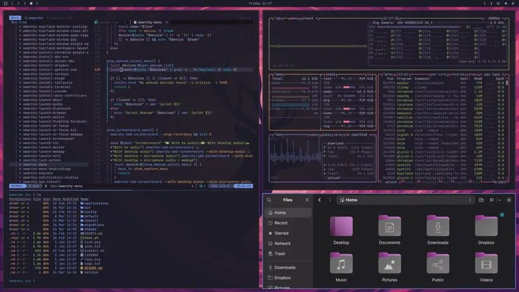
Le manuel officiel est franc là-dessus, et il vaut mieux l’entendre tout de suite : « Omarchy n’est pas comme Windows et pas comme macOS non plus. Il n’essaie pas d’être le plus familier possible. Il essaie d’être beau et meilleur. »
Ce que cela implique, en pratique :
Le manuel officiel donne un conseil que ce guide reprend à son compte : donnez-vous deux semaines. Les réflexes se transfèrent bien plus vite qu’on ne le croit, et le seul raccourci qu’il faut vraiment mémoriser est Super + K, qui affiche tous les autres.
Quelques noms propres reviennent sans arrêt et méritent d’être posés dès maintenant :
| Le menu Omarchy | Le menu central du système, ouvert par Super + Espace. Il lance des applications, change les réglages, installe des logiciels, capture l’écran — presque tout passe par là. |
| La barre du haut | La bande fine en haut de l’écran. Elle remplace à la fois la barre de menus, la zone de notification et le centre de notifications que vous connaissiez. |
| Le shell Omarchy | Le processus unique qui dessine la barre, le menu, les notifications et l’écran de verrouillage. |
La commande omarchy | Le poste de commande en ligne de commande. Tout ce que fait le menu, elle sait le faire aussi. |
Une douzaine de mots qui reviennent partout. Les connaître évite de relire trois fois chaque phrase du manuel.
Ce chapitre est une base de départ, pas un glossaire exhaustif — celui-ci se trouve en annexe C. L’objectif ici est de rendre lisibles les chapitres qui suivent.
pacman. Vous ne l’appellerez presque jamais directement : Omarchy passe par sa propre commande omarchy, pour de bonnes raisons expliquées au chapitre 39.~ (le tilde)remi, alors ~/.config signifie /home/remi/.config.~/.config/. C’est votre territoire : Omarchy n’y écrase rien lors des mises à jour.sudoPas besoin de retenir tout cela maintenant. Le glossaire de l’annexe C est fait pour être consulté au vol, et chaque terme y renvoie au chapitre qui l’utilise réellement.
Vos doigts savent cent choses que votre cerveau a oublié avoir apprises. Voici où elles atterrissent sur Omarchy.
Ce chapitre est une couche de traduction. Il ne détaille pas les fonctionnalités — chacune a son chapitre plus loin — il indique seulement où va chacun de vos réflexes actuels.
Toute la mémoire musculaire que vous avez construite autour de Cmd (Mac) ou de la touche Windows se reporte sur une seule touche : Super. C’est la touche « logo Windows » sur un clavier PC, et c’est le point d’ancrage de presque tous les raccourcis d’Omarchy.
Votre réflexe Spotlight, Raycast ou menu Démarrer devient Super + Espace. Cela ouvre le menu Omarchy, qui lance les applications, change les réglages, installe des logiciels, capture l’écran — à peu près tout. On commence à taper pour filtrer. Il existe aussi un menu dédié aux seules applications sur Super + Alt + Espace.
Sur un Mac, Linux traite la touche Cmd comme Super. Autrement dit, Super se trouve exactement là où Cmd a toujours été : votre pouce ne verra pas la différence. Omarchy ne remappe rien.
Rien à cliquer pour lancer un programme, aucune icône à ranger sur le bureau. Les applications démarrent par un raccourci — Super + Entrée pour le terminal, Super + Maj + Entrée pour le navigateur, Super + K pour la liste de tout ce qui est associé à une touche — ou depuis le menu.
Le seul élément d’interface permanent est la barre du haut, qui remplace à elle seule la barre de menus, la zone de notification et le centre de notifications. Et presque chacun de ses éléments fait quelque chose de différent au clic gauche, au clic droit et au clic du milieu (chapitre 9).
C’est le plus grand changement de mentalité : vous ne déplacez plus les fenêtres et vous ne les collez plus aux moitiés d’écran. Ouvrez une fenêtre, elle prend tout l’écran. Ouvrez-en une seconde, elles se partagent l’espace. Vous ne repêchez jamais une fenêtre cachée sous une autre, parce que les fenêtres ne se recouvrent pas.
Quand vous avez réellement besoin d’une fenêtre flottante, Super + T fait sortir la fenêtre active du pavage — et l’y remet. Mais laissez d’abord une vraie chance au pavage : c’est le cœur du système.
Les espaces de travail, eux, vous sembleront familiers : ce sont les Spaces de macOS ou les bureaux virtuels de Windows, sauf que vous vous en servirez pour de bon, parce que Super + 1/2/3/4 y saute directement et Super + Maj + 1/2/3/4 y envoie la fenêtre active. Pas d’animation, pas d’attente. Le manuel officiel note d’ailleurs que cela rend souvent inutile le second écran auquel on s’était habitué.
Sur Mac, vous aviez Cmd + C partout. Sur Windows, Ctrl + C partout — sauf dans le terminal, où cela tue le programme en cours. Omarchy donne Super + C, Super + X et Super + V, et ils fonctionnent partout, terminal compris. Aucun réflexe séparé à apprendre.
Pour les habitués de Windows : votre historique de presse-papiers Win + V se trouve sur Super + Ctrl + V, et il conserve aussi bien le texte que les images (chapitre 11).
| Ce que vous cherchez | Sur Omarchy |
|---|---|
| Spotlight / Raycast / menu Démarrer | Super + Espace — le menu Omarchy |
| AirDrop | LocalSend, par Super + Ctrl + S (chapitre 29) |
| Cmd+Maj+4 / Win+Maj+S | La touche Impr. écran (chapitre 12) |
| Centre de notifications | Historique des notifications : Super + Maj + Alt + , |
| Time Machine (pour le système) | Instantanés système automatiques à chaque mise à jour (chapitre 45) |
| App Store / télécharger un installeur | Install dans le menu, ou omarchy pkg add (chapitre 40) |
| Préférences Système / Panneau de configuration | Setup dans le menu, qui édite de simples fichiers de configuration (chapitre 41) |
Beaucoup de réglages vivent dans des fichiers texte qu’on édite, pas dans des panneaux qu’on parcourt. Le menu Setup vous dépose directement dans le bon fichier et redémarre ce qui doit l’être quand vous ressortez de l’éditeur.
Les mises à jour passent par une seule commande — Update > Omarchy — qui met à jour Omarchy lui-même et tous les paquets du système, en prenant un instantané au préalable. Pas d’« updater » par application qui vous harcèle à des moments aléatoires.
Les logiciels viennent d’un gestionnaire de paquets, pas d’installeurs téléchargés.
Et quand vous fermez une fenêtre, l’application se termine vraiment. Pas de limbes à la macOS où le programme continue de tourner sans fenêtre : Super + W veut dire « parti ».
Sur un clavier français AZERTY, la rangée de chiffres nécessite Maj pour produire un chiffre. Configurez votre disposition clavier dès le premier jour (chapitre 18) plutôt que de vous battre avec les raccourcis. Et vérifiez ensuite avec Super + K ce qui répond réellement sur votre machine : c’est la liste vivante des raccourcis actifs, elle fait toujours foi.
Parcourez une fois le chapitre 10 (les raccourcis), puis oubliez-le. Chaque fois que vous séchez sur une combinaison, Super + K vous les montre toutes. C’est le seul raccourci que vous ayez vraiment à mémoriser.
Du tout premier démarrage à un système à jour, connecté, à votre goût et prêt à travailler — dans l’ordre, sans rien sauter.
Le mot de passe de déchiffrement, l’absence d’écran de connexion, et les deux notifications qui vous accueillent.
À l’allumage, avant même que le bureau n’existe, Omarchy demande le mot de passe qui déverrouille le disque. C’est le chiffrement LUKS : par défaut, l’installation d’Omarchy chiffre intégralement le disque. Sans ce mot de passe, les données sont illisibles, y compris pour quelqu’un qui démonterait le disque pour le brancher ailleurs.
Un clavier Bluetooth ne fonctionne pas à cet écran. Le déchiffrement du disque intervient avant que la pile Bluetooth ne soit chargée — exactement comme on ne peut pas entrer dans le BIOS d’un PC avec un clavier Bluetooth. Il vous faut un clavier filaire ou un clavier à dongle 2,4 GHz. C’est le piège numéro un des nouveaux venus, et il n’a aucun contournement.
Ce mot de passe de disque est distinct de celui de votre compte utilisateur — sauf sur une machine préparée pour un autre propriétaire, où le mot de passe choisi au premier démarrage devient aussi le mot de passe de chiffrement. Les deux peuvent être changés plus tard, indépendamment, par Update > Password (chapitre 46).
Une fois le mot de passe accepté, le système démarre directement sur le bureau Hyprland. Il n’y a pas de gestionnaire d’affichage, pas de deuxième écran de connexion, pas de liste d’utilisateurs à choisir. C’est déroutant au début : on attend un écran qui ne vient jamais.
Ce que vous voyez alors : un fond d’écran, une fine barre en haut, et rien d’autre. Pas de dock, pas d’icônes, pas de menu Démarrer. La souris ne sert à rien pour l’instant.
Au premier démarrage, Omarchy affiche deux notifications utiles : une invitation à mettre le système à jour, et une invitation à apprendre les raccourcis clavier. Elles ne sont pas décoratives : ce sont exactement les deux premières choses à faire, et le chapitre suivant les déroule dans l’ordre.
Si vous fermez ces notifications trop vite, rien n’est perdu. Super + Maj + Alt + , ouvre l’historique des notifications, et Super + K affiche la liste des raccourcis à tout moment.
Appuyez sur Super + Entrée. Une fenêtre de terminal s’ouvre et occupe tout l’écran. Appuyez maintenant sur Super + Maj + Entrée : le navigateur s’ouvre, et les deux fenêtres se partagent l’écran d’elles-mêmes. Vous venez de voir le pavage à l’œuvre.
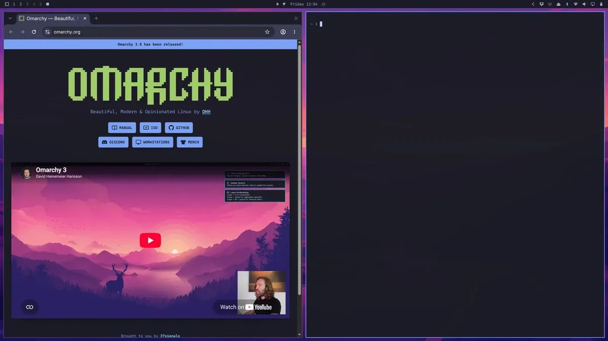
Pour fermer une fenêtre : Super + W. Pour fermer toutes les fenêtres d’un coup : Ctrl + Alt + Suppr.
Omarchy prévoit un mode où la personne qui installe la machine ne répond pas aux questions personnelles à votre place — utile pour un proche, un nouveau salarié ou un acheteur. Dans ce cas, le système est bien installé, mais la disposition clavier, le nom d’utilisateur et le mot de passe sont demandés au premier démarrage, par vous. Le disque reste chiffré par défaut, et le mot de passe que vous choisissez alors devient également le mot de passe de chiffrement.
Une machine déjà utilisée peut être transmise sans réinstallation, via Setup > Reset Computer : voir le chapitre 46. Et si l’installation a été faite sans chiffrement — un choix possible pour une machine jetable ou physiquement protégée — sachez que la remise à zéro est alors une suppression, pas un effacement sécurisé.
Neuf étapes, dans cet ordre. Comptez trente à quarante minutes, dont beaucoup d’attente pendant les téléchargements.
Rien ici n’est obligatoire au sens strict, mais chaque étape évite un agacement plus tard. Les chapitres cités en fin de ligne développent chaque point.
~/.config/hypr/input.lua, accessible par Setup > Input dans le menu. Le chapitre 18 donne le bloc exact à écrire pour l’AZERTY, et explique comment basculer entre deux dispositions. (chapitre 18)| Raccourci | Ce qu’il fait |
|---|---|
| Super + K | Affiche tous les raccourcis. Celui qui vous sauve quand vous avez oublié les quatre autres. |
| Super + Espace | Ouvre le menu Omarchy : applications, réglages, installation, captures. |
| Super + Entrée | Ouvre un terminal. |
| Super + W | Ferme la fenêtre active. |
| Super + Flèches | Déplace le focus d’une fenêtre à l’autre. |
Un sixième mérite d’être ajouté au bout de quelques heures : Super + Échap, qui ouvre le menu système (mise en veille, redémarrage, extinction, économiseur d’écran). C’est la réponse à la question « mais comment j’éteins cette machine ? », qui vient plus tôt qu’on ne croit.
sudo, si votre portable a un capteur (chapitre 44).Ne cédez pas à la tentation de lancer pacman -Syu ou yay -Syu directement, même si vous connaissez Arch. Vous perdriez l’instantané de sécurité, les migrations et les mises à jour de configuration qu’Omarchy exécute en même temps que les paquets. Omarchy bloque d’ailleurs volontairement ces commandes et vous renvoie vers omarchy update. (chapitre 39)
Une seule touche donne accès à tout : lancer, installer, retirer, régler, capturer, mettre à jour.
Le manuel officiel le dit sans détour : au démarrage du système, vous ne pouvez littéralement rien faire à la souris seule — mais Super + Espace révèle le menu Omarchy, et de là vous pouvez à peu près tout faire.
On commence à taper pour filtrer les entrées ; les flèches et Entrée naviguent ; Échap referme. Il n’y a rien de plus à apprendre.
Les libellés sont en anglais à l’écran. Voici ce que recouvre chacun :
| Entrée du menu | Ce qu’on y trouve |
|---|---|
| Apps | Les applications installées, y compris les applications web et les TUIs déclarées. |
| Install | Tout ce qui s’installe : paquets Arch, paquets AUR, navigateurs, éditeurs, environnements de développement, jeux, services (1Password, Spotify, Tailscale, Dropbox…), applications web, terminaux, polices, thèmes, fonds d’écran, outils d’IA, VM Windows. |
| Remove | Le miroir exact d’Install : retirer un paquet, une application web, un navigateur, un TUI, la VM Windows, l’empreinte digitale… ou tous les préinstallés d’un coup. |
| Style | Thème, fond d’écran, police, écran de déverrouillage, économiseur d’écran, écran About, position et transparence de la barre. |
| Setup | La configuration : écrans, raccourcis, périphériques d’entrée, applications par défaut, réseau (DNS, QR code Wi-Fi), sécurité (SSHD, empreinte, Fido2, sudo sans mot de passe), plugins, démarrage direct, remise à zéro de la machine. |
| Update | Omarchy et les paquets, le canal de publication, le firmware, le fuseau horaire, l’heure, les mots de passe, les configurations, et le redémarrage d’un composant matériel (Wi-Fi, Bluetooth, audio, pavé tactile). |
| Trigger | Les actions ponctuelles : captures d’écran et enregistrements, partage (LocalSend), bascules (nuit, ne pas déranger, veille…), matériel, rappels, transcodage, tests de débit. |
| System | Mise en veille, hibernation, redémarrage, extinction, économiseur d’écran. Accessible directement par Super + Échap. |
| About | Les informations système (Fastfetch), avec le logo ASCII que vous pouvez remplacer par le vôtre. |
Deux menus, deux usages. Super + Espace ouvre le menu complet (applications et tout le reste). Super + Alt + Espace ouvre le menu des seules applications — plus rapide quand vous savez que vous cherchez un programme.
Plusieurs sections du menu ont leur propre raccourci, ce qui évite de naviguer :
| Super + Échap | System — veille, redémarrage, extinction |
| Super + Ctrl + O | Trigger > Toggle — les bascules |
| Super + Ctrl + H | Trigger > Hardware — pavé tactile, écran externe, GPU hybride |
| Super + Ctrl + C | Trigger > Capture — captures et enregistrements |
| Super + Ctrl + S | Trigger > Share — envoi par LocalSend |
| Super + Ctrl + Maj + Espace | Style > Theme — le sélecteur de thème |
Le menu est scriptable, ce qui est pratique pour vos propres raccourcis :
omarchy menu # ouvre le menu à la racine omarchy menu summon style.theme # saute directement au sélecteur de thème omarchy menu toggle system # ouvre le menu système, ou le referme s'il est déjà ouvert omarchy menu close # le referme
Le menu accepte vos propres lignes, déclarées dans ~/.config/omarchy/extensions/omarchy-menu.jsonc. Les entrées sont identifiées par un identifiant à points, et c’est cet identifiant qui décide de leur place dans l’arborescence : personal apparaît à la racine, personal.notes apparaît à l’intérieur.
"personal": {"icon":"","label":"Personnel"},
"personal.notes": {"icon":"","label":"Notes","action":"omarchy-launch-editor ~/notes"},
Reprendre un identifiant existant remplace la ligne correspondante au lieu d’en ajouter une. Le fichier livré documente tous les champs disponibles en commentaires.
Le cœur d’Omarchy. Fenêtres, espaces de travail, barre du haut, presse-papiers, captures : tout ce qui compose la journée de travail, et tout ce qui passe par les doigts.
Ouvrir, fermer, déplacer, redimensionner, empiler — sans jamais toucher la souris.
Le principe est celui-ci : vous n’organisez pas les fenêtres, vous en ouvrez et vous en fermez, et Hyprland décide de la disposition. Cela paraît contraignant pendant une journée, puis devient une évidence.
Faites-la vraiment, elle vaut mieux qu’une explication.
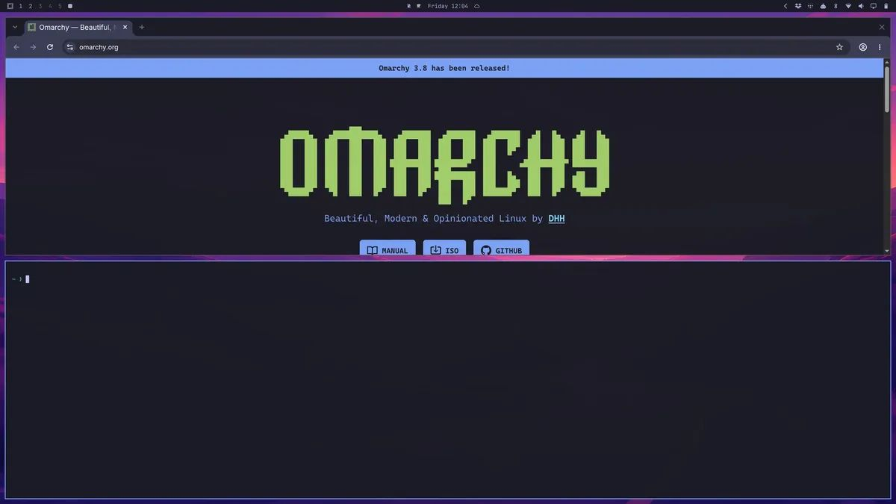
Ajoutez maintenant Super + Ctrl + T — le moniteur d’activité, qui s’ouvre en fenêtre flottante. Super + T l’intègre au pavage (et l’en ressort si vous appuyez à nouveau). Puis Super + Maj + F pour le gestionnaire de fichiers : vous obtenez une disposition en quatre.
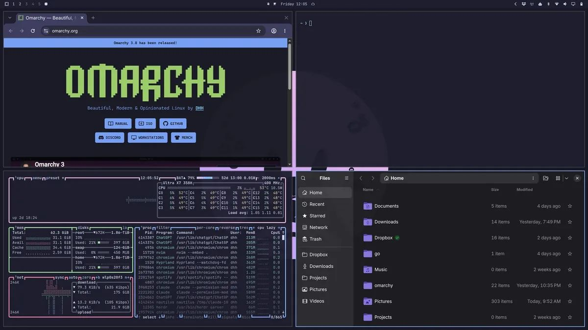
| Raccourci | Effet |
|---|---|
| Super + Flèche | Donne le focus à la fenêtre située dans cette direction. Le curseur de souris se déplace au centre de la nouvelle fenêtre. |
| Super + Maj + Flèche | Échange la fenêtre active avec celle qui est dans cette direction. |
| Super + W | Ferme la fenêtre active — et l’application se termine réellement. |
| Ctrl + Alt + Suppr | Ferme toutes les fenêtres. |
| Alt + Tab | Fait défiler les fenêtres de l’espace de travail actif. |
| Super + F | Plein écran. |
| Super + Alt + F | Pleine largeur, en gardant la barre du haut visible. |
| Super + Ctrl + F | Plein écran à l’intérieur de la fenêtre — idéal pour une vidéo YouTube. |
| Super + - / = | Élargit / rétrécit la fenêtre horizontalement. |
| Super + Maj + - / = | Rétrécit / agrandit verticalement. |
| Super + Alt + - / = | Les mêmes redimensionnements, par pas plus fins. |
| Super + Ctrl + - / = | Les mêmes, par pas plus larges. |
| Super + Alt + Origine | Mémorise la largeur courante de la fenêtre. |
| Super + Origine | Restaure la largeur mémorisée. |
Elle n’est pas interdite, elle est simplement secondaire. En maintenant Super :
La disposition par défaut s’appelle dwindle. Elle garde visibles en permanence toutes les fenêtres d’un même espace de travail, quitte à les rétrécir.
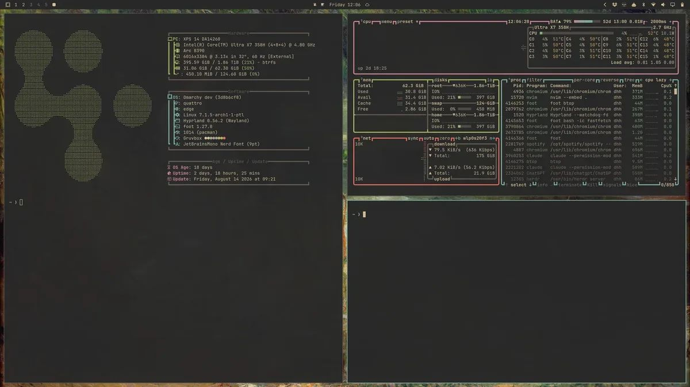
L’alternative est la disposition scrolling, où les fenêtres s’alignent côte à côte en débordant du bord visible de l’écran, comme un ruban dans lequel on fait défiler. Super + L bascule un espace de travail dans ce mode.
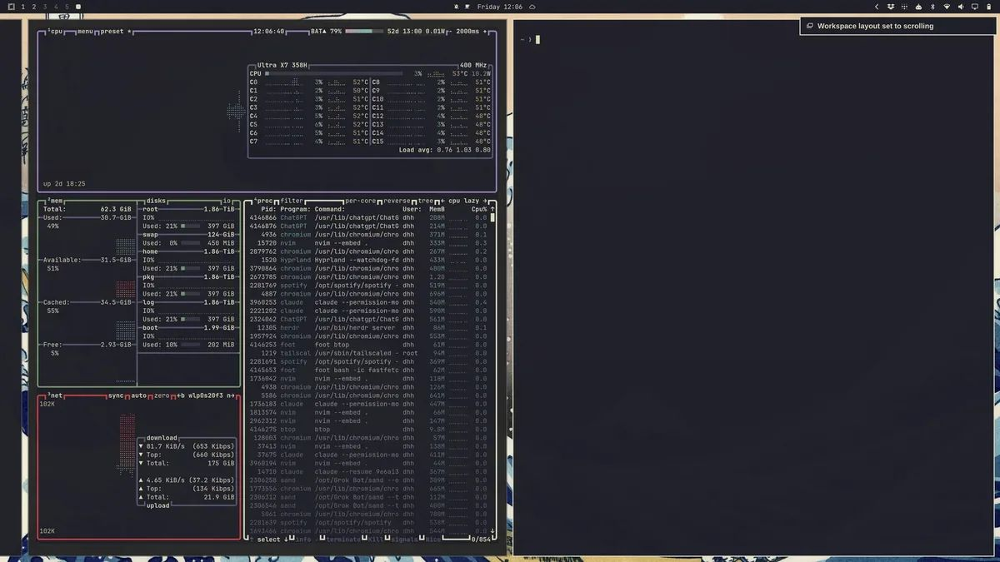
Le choix est par espace de travail et il persiste : vous pouvez garder l’espace 1 en dwindle pour naviguer et l’espace 2 en scrolling pour coder, et les retrouver ainsi après un redémarrage. La même bascule figure sous Trigger > Toggle > Workspace Layout.
Pour faire de scrolling la disposition par défaut, éditez ~/.config/hypr/looknfeel.lua :
hl.config({
general = {
layout = "scrolling",
},
})
| Super + P | Bascule le style pseudo de la fenêtre (taille naturelle ou étirée). |
| Super + Retour arr. | Rend la fenêtre transparente, ou opaque. |
| Super + Maj + Retour arr. | Supprime ou rétablit les espaces entre fenêtres. |
| Super + Ctrl + Retour arr. | Bascule le format carré quand une seule fenêtre est ouverte. |
| Super + Ctrl + Z | Zoome sur l’écran (à répéter pour zoomer davantage). |
| Super + Ctrl + Alt + Z | Dézoome complètement. |
Le zoom d’écran est excellent en réunion ou en démonstration : il agrandit la zone autour du curseur sans rien changer à la disposition des fenêtres.
Trois façons de ranger des fenêtres qu’on ne veut pas voir tout le temps.
Un espace de travail est un bureau virtuel. Sur Omarchy, on y saute instantanément, ce qui change tout par rapport aux bureaux virtuels qu’on n’utilisait jamais ailleurs.
| Raccourci | Effet |
|---|---|
| Super + 1 à 4 | Va à l’espace de travail correspondant. |
| Super + Tab | Espace suivant. |
| Super + Maj + Tab | Espace précédent. |
| Super + Ctrl + Tab | Revient à l’espace d’où l’on vient. |
| Super + Maj + 1 à 4 | Envoie la fenêtre active sur cet espace et l’y suit. |
| Super + Maj + Alt + 1 à 4 | Envoie la fenêtre active sur cet espace sans l’y suivre. |
| Super + Molette | Fait défiler les espaces. |
| Super + Maj + Alt + Flèches | Déplace les espaces vers l’écran situé dans cette direction (multi-écrans). |
Le manuel officiel souligne un effet secondaire : puisque le passage d’un espace à l’autre est instantané et sans animation, on finit souvent par n’avoir plus besoin du deuxième écran auquel on s’était habitué. Une organisation qui marche bien : espace 1 pour le navigateur, 2 pour le code, 3 pour la communication, 4 pour le reste.
Un groupe empile plusieurs fenêtres dans un seul emplacement du pavage, avec des onglets. C’est utile quand cinq terminaux doivent occuper le même quart d’écran.
| Super + G | Crée un groupe — ou le dissout entièrement si l’on appuie à nouveau. Tant que le groupe est actif, chaque nouvelle fenêtre lancée le rejoint. |
| Super + Ctrl + ← / → | Passe d’une fenêtre du groupe à l’autre. |
| Super + Alt + 1 à 5 | Va directement à la n-ième fenêtre du groupe. |
| Super + Alt + Tab | Fait défiler les fenêtres du groupe (avec Maj pour l’autre sens). |
| Super + Alt + G | Sort la fenêtre active du groupe. |
| Super + Alt + Flèche | Fait entrer dans le groupe une fenêtre extérieure située dans cette direction. |
Super + O « fait sortir » (pop) la fenêtre de son espace de travail : elle devient flottante et collante, et vous accompagne sur tous les espaces où vous allez. Parfait pour un lecteur vidéo ou une visioconférence pendant que vous travaillez ailleurs.
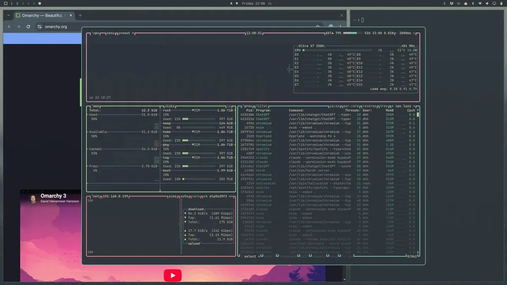
Le scratchpad est un espace de travail particulier, qui se superpose à celui où vous êtes au lieu de le remplacer.
C’est l’endroit idéal pour un terminal de contrôle ou un panneau que l’on veut consulter deux secondes sans quitter ce que l’on fait. Pour en sortir une fenêtre définitivement, envoyez-la simplement vers un espace normal, par exemple avec Super + Maj + 1.
| Ctrl + Alt + Tab | Déplace le focus d’un écran à l’autre (avec Maj pour l’autre sens). |
| Super + Maj + Alt + Flèches | Déplace les espaces de travail vers l’écran voisin. |
La configuration des écrans eux-mêmes — position, définition, mise à l’échelle — est traitée au chapitre 17.
Le seul élément d’interface toujours visible. Et presque chaque icône y fait trois choses différentes.
La bande en haut de l’écran n’est pas une barre d’état ajoutée par-dessus : elle fait partie du shell Omarchy, le processus Quickshell unique qui dessine aussi le menu, les notifications, les bulles de réglage et l’écran de verrouillage. C’est pour cela qu’elle s’accorde parfaitement au thème et qu’un panneau s’ouvre instantanément au lieu de lancer une application.
La barre a trois sections :
Certains éléments n’apparaissent que lorsqu’ils ont quelque chose à dire : la disposition clavier ne s’affiche que si vous en avez configuré plusieurs, la pastille de mise à jour seulement quand une mise à jour attend, et l’icône des agents la première fois qu’Omarchy détecte un usage d’agent IA sur la machine.
C’est la partie que tout le monde manque : le clic droit et le clic du milieu cachent une bonne partie des fonctions utiles.
| Élément | Gauche · Droit · Milieu / molette |
|---|---|
| Menu (le logo) | Menu Omarchy · Nouveau terminal · — |
| Espaces de travail | Aller sur cet espace · — · — |
| Horloge | Calendrier · Change le format affiché · Milieu : choix du fuseau horaire |
| Météo | Prévisions · Météo complète en notification · Milieu : actualiser |
| Audio | Panneau audio · Couper le son · Milieu : panneau · Molette : volume |
| Microphone | Couper le micro · — · Milieu : panneau audio · Molette : volume d’entrée |
| Réseau | Panneau réseau · — · — |
| Bluetooth | Panneau Bluetooth · Allumer/éteindre la radio · — |
| Affichage | Panneau d’affichage · — · Molette : luminosité |
| Alimentation | Panneau d’alimentation · Afficher/masquer le pourcentage de batterie · — |
| Média | Lecture/pause · Pochette en grand · Milieu : piste suivante · Molette : piste préc./suiv. |
| Agents | Panneau des agents · Lancer votre agent · Milieu : abonnement suivant |
| Zone de notification | Survoler pour dérouler · Clic droit sur le chevron pour gérer · — |
| Mise à jour Omarchy | Lance la mise à jour · — · — |
Deux éléments de ce tableau ne sont pas sur votre barre par défaut : le lecteur média (titre et artiste défilants) et le microphone. Ils sont livrés avec le système mais désactivés ; la section « Ajouter ou retirer un élément » plus bas explique comment les faire apparaître.
Cliquer une icône ouvre un panneau : une vraie fenêtre déroulante avec des curseurs, des listes et une navigation au clavier — pas une simple bulle d’information. Chacun a son raccourci, ce qui évite de viser une icône de seize pixels.
| Raccourci | Panneau |
|---|---|
| Super + Ctrl + A | Audio |
| Super + Ctrl + W | Réseau / Wi-Fi |
| Super + Ctrl + B | Bluetooth |
| Super + Ctrl + D | Affichage |
| Super + Ctrl + P | Alimentation |
| Super + Ctrl + Alt + D | Calendrier |
| Super + Ctrl + 1 à 9 | Le n-ième panneau de la section droite |
Ces panneaux ne sont pas de simples afficheurs, ce sont les endroits où l’on agit :
Tous les panneaux se pilotent au clavier autant qu’à la souris : les flèches déplacent, Entrée valide, Tab passe au panneau voisin et Échap ferme.
Le petit groupe de symboles près de l’horloge signale les modes actifs : ne pas déranger, filtre lumière bleue, rappel en attente, enregistrement d’écran en cours, veille inhibée, dictée. Ils s’allument quand le mode est actif et restent discrets sinon — survolez le centre de la barre pour voir les inactifs en grisé. Un clic sur un indicateur bascule le mode correspondant.
Pour les afficher en permanence, passez alwaysShow à true sur l’élément omarchy.indicators. Pour n’en garder que certains, listez-les dans items : ["Dnd", "Reminder", "NightLight"].
La barre se configure à la souris, sans ouvrir de fichier :
Le même résultat par le menu se trouve sous Style > Menu Bar. Et en commandes — ce que vous voulez pour une configuration versionnée :
omarchy bar position bottom omarchy bar transparent toggle omarchy bar move omarchy.clock --section center --index 0 omarchy bar set omarchy.clock format "HH:mm" omarchy bar defaults # revient à la disposition d'origine
omarchy plugin list affiche tous les éléments que le shell connaît, avec leur identifiant. Ensuite :
omarchy plugin enable omarchy.media --section center omarchy plugin disable omarchy.weather
Super + Maj + Espace masque la barre et la fait revenir, sans tuer le shell : les panneaux et les raccourcis continuent de fonctionner, vous récupérez simplement les pixels. La même bascule figure sous Trigger > Toggle > Menu Bar.
Tout est stocké dans ~/.config/omarchy/shell.json, sous la clé bar :
{
"version": 1,
"bar": {
"position": "top",
"transparent": false,
"centerAnchor": "omarchy.clock",
"layout": {
"left": [{ "id": "omarchy.menu" }, { "id": "omarchy.workspaces" }],
"center": [{ "id": "omarchy.clock", "format": "HH:mm" }],
"right": [{ "id": "omarchy.audio" }, { "id": "omarchy.power" }]
}
}
}
Chaque élément est une entrée dans l’un des trois tableaux, et ses réglages sont écrits directement sur cette entrée — il n’y a pas de fichier de réglages séparé. centerAnchor désigne l’élément central qui reste rigoureusement au milieu de l’écran, les autres se répartissant autour : c’est ainsi que l’horloge ne bouge pas quand la météo ou la pastille de mise à jour apparaissent et disparaissent.
Une règle à bien intégrer : dès que vous avez votre propre shell.json, c’est lui qui fait loi. Tant que vous n’avez rien personnalisé, le shell lit le fichier par défaut d’Omarchy. À la première modification — un élément déplacé, une commande omarchy bar, une édition manuelle — le fichier devient le vôtre. Il n’y a pas de fusion : les nouveaux éléments ajoutés par les futures versions d’Omarchy n’apparaîtront pas automatiquement sur votre barre. omarchy bar defaults remet la disposition livrée quand vous voulez repartir à zéro.
Ce même fichier contient aussi vos délais d’inactivité, à la racine et non sous bar : idle.screensaver et idle.lock, en secondes (chapitre 14).
Non pas la liste complète — elle est en annexe A — mais ceux qu’on utilise vraiment, regroupés par moment de la journée.
Un seul raccourci est vraiment indispensable : Super + K, qui affiche toutes les combinaisons actives sur votre machine. Deux variantes existent : Super + Alt + K pour les raccourcis Tmux, et Super + Ctrl + K pour ceux de Herdr.
Omarchy associe une touche à chacune des applications qu’il livre. Les plus utiles :
| Super + Entrée | Terminal |
| Super + Alt + Entrée | Terminal avec une session Tmux |
| Super + Ctrl + Entrée | Herdr, le gestionnaire d’agents |
| Super + Maj + Entrée | Navigateur |
| Super + Maj + Alt + B | Navigateur en navigation privée |
| Super + Maj + F | Gestionnaire de fichiers |
| Super + Maj + Alt + F | Gestionnaire de fichiers, dans le dossier courant du terminal |
| Super + Maj + N | Éditeur (Neovim par défaut) |
| Super + Maj + O | Obsidian |
| Super + Maj + W | Omawrite, l’éditeur Markdown minimaliste d’Omarchy |
| Super + Maj + D | Lazydocker |
| Super + Maj + M | Spotify |
| Super + Maj + Alt + M | Cliamp, le lecteur de musique rétro en terminal |
| Super + Maj + / | 1Password |
| Super + Maj + G | Signal |
Les applications web ont elles aussi leurs touches (HEY, ChatGPT, WhatsApp, YouTube, X…) : elles sont listées en annexe A. Toutes se modifient dans ~/.config/hypr/bindings.lua.
Plusieurs de ces raccourcis pointent vers des logiciels non installés par défaut — 1Password, Spotify, Signal. Appuyer sur la touche déclenche alors l’installation, puis lance l’application. Vous n’avez pas besoin de passer par le menu Install.
| Super + Échap | Menu système : veille, redémarrage, extinction |
| Super + Ctrl + L | Verrouiller l’écran |
| Super + Ctrl + T | Moniteur d’activité (btop) |
| Super + Ctrl + Q | Calculatrice |
| Super + Ctrl + E | Sélecteur d’émoji |
| Super + Ctrl + S | Menu de partage (LocalSend) |
| Super + Ctrl + . | Transcoder une image ou une vidéo |
| Super + Maj + Ctrl + A | Lancer l’agent IA par défaut |
Les touches de fonction dédiées de votre clavier fonctionnent normalement. Ce sont les modificateurs qui sont intéressants :
| Maj + Luminosité +/− | Luminosité maximale / minimale d’un coup |
| Alt + Luminosité +/− | Réglage fin, par pas de 1 % |
| Alt + Volume +/− | Réglage fin du volume, par pas de 1 % |
| Maj + Muet | Passe à la sortie audio suivante |
| Alt + Lecture | Piste suivante (avec Maj, piste précédente) |
| Maj + Lecture | Passe à la source média suivante |
Vos raccourcis personnels vont dans ~/.config/hypr/bindings.lua, accessible par Setup > Keybindings. Ce fichier vous appartient : il n’est jamais écrasé par une mise à jour. Pour remplacer une association existante, on la retire puis on la redéfinit :
hl.unbind("SUPER + SHIFT + O")
o.bind("SUPER + SHIFT + O", "Joplin", "joplin-desktop")
Les raccourcis de Tmux, du terminal Ghostty, du gestionnaire de fichiers et de Neovim ne sont pas des raccourcis Hyprland : ils appartiennent à ces programmes et se configurent chez eux. L’annexe A les regroupe malgré tout, parce qu’au quotidien la distinction n’a guère d’importance.
Omarchy fait de la touche Verr. Maj une touche de composition. Des séquences courtes insèrent alors directement un émoji : Verr.Maj M S donne 😄, Verr.Maj M H donne ❤️, Verr.Maj M Y donne 👍. La liste complète figure en annexe A.
Trois complétions de texte utilisent le même mécanisme : Verr.Maj Espace Espace insère un tiret cadratin, Verr.Maj Espace N votre nom et Verr.Maj Espace E votre adresse e-mail, telles que saisies à l’installation. On en ajoute d’autres en éditant ~/.XCompose, puis en lançant omarchy-restart-xcompose pour que les changements soient pris en compte.
C’est la raison pour laquelle Verr. Maj ne verrouille plus les majuscules. Si cela vous manque, déplacez la touche de composition ailleurs en éditant ~/.config/hypr/input.lua — voir le chapitre 18.
Un seul jeu de raccourcis pour copier et coller partout, terminal compris — plus un historique.
C’est l’une des idées les plus simples et les plus appréciables d’Omarchy. Habituellement sous Linux, il faut Ctrl + Maj + C et Ctrl + Maj + V dans le terminal, et Ctrl + C / V partout ailleurs. Deux réflexes différents pour un même geste, ce qui est déroutant pour quiconque n’a pas grandi sous Linux.
| Raccourci | Action |
|---|---|
| Super + C | Copier |
| Super + X | Couper (sans effet dans le terminal) |
| Super + V | Coller |
| Super + Ctrl + V | Ouvrir l’historique du presse-papiers |
Ces raccourcis fonctionnent partout, y compris dans le terminal — où Ctrl + C conserve son rôle historique d’interruption du programme en cours.
L’historique est fourni par le shell Omarchy et fonctionne aussi bien pour le texte que pour les images. On l’ouvre avec Super + Ctrl + V, on sélectionne une entrée avec Entrée, et celle-ci est placée dans le presse-papiers, prête à être collée avec Super + V.
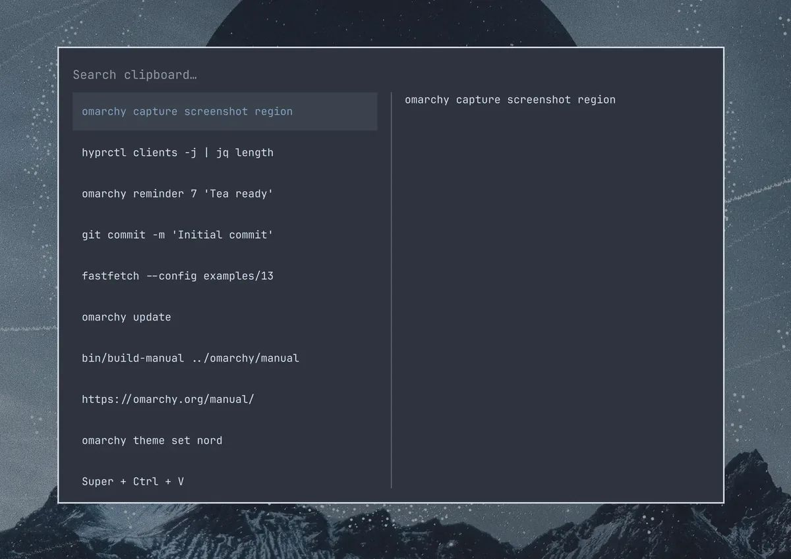
On peut aussi chercher dans l’historique : il suffit de commencer à taper.
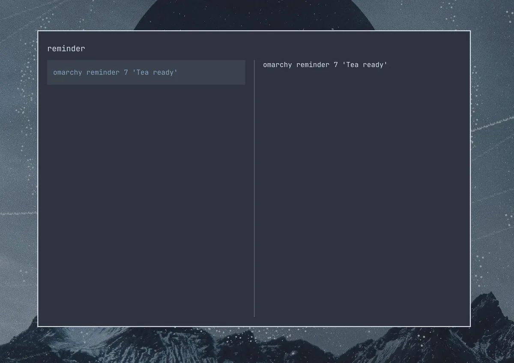
Les extensions de navigateur d’Omarchy alimentent ce même historique. Alt + Maj + L copie l’adresse de l’onglet courant dans le presse-papiers système — donc consultable dans l’historique et collable partout — au lieu du presse-papiers interne du navigateur (chapitre 30).
Deux limites à connaître. D’abord, la plupart des interfaces d’agents IA utilisent Ctrl + V pour coller une image, mais Super + V pour le texte. Ensuite, certaines données sont volontairement marquées comme sensibles et n’entrent pas dans l’historique : c’est le cas des QR codes décodés, qui transportent souvent des secrets comme les URI otpauth:// des codes d’authentification à deux facteurs (chapitre 12). Le collage fonctionne, mais rien n’est conservé.
Tout part de la touche Impr. écran. Seule, elle prend une image ; avec un modificateur, une vidéo, une couleur ou du texte.
| Raccourci | Effet |
|---|---|
| Impr. écran | Capture d’écran |
| Alt + Impr. écran | Enregistrement vidéo (ou arrêt de celui en cours) |
| Super + Impr. écran | Pipette à couleur |
| Super + Ctrl + Impr. écran | Extraction du texte d’une zone (OCR) |
| Super + Ctrl + C | Le menu Capture, pour les claviers sans touche Impr. écran |
| Super + Ctrl + . | Transcoder une image ou une vidéo |
Appuyez sur Impr. écran : l’écran se fige, pour que rien ne bouge pendant que vous visez. Tracez un rectangle à la souris pour une zone libre, ou faites un simple clic et la capture s’ajuste au rectangle sur lequel vous avez cliqué — une fenêtre si vous êtes tombé dessus, l’écran entier si vous avez cliqué sur la barre ou dans un espace vide. Changement d’avis ? Impr. écran à nouveau annule.
Le résultat part à deux endroits en même temps : un fichier PNG dans votre dossier d’images, et le presse-papiers, pour coller directement dans une conversation avec Super + V. Une notification apparaît avec une vignette ; cliquez-la (ou Super + Alt + , pour invoquer la dernière notification) et la capture s’ouvre dans Tensaku, l’éditeur d’annotation, où vous pouvez tracer des flèches et des cadres avant d’envoyer.
Les fichiers atterrissent dans ~/Pictures, nommés selon le modèle screenshot-2026-08-13_14-22-05.png.
Pendant que la sélection est à l’écran, la souris est facultative :
| Entrée | Capture la fenêtre en surbrillance |
| Ctrl + Entrée | Capture l’écran entier |
| Tab / Ctrl + Tab | Fenêtre suivante / précédente |
| Flèches | Met en surbrillance la fenêtre située dans cette direction |
Ces associations n’existent que pendant la sélection : elles ne peuvent donc entrer en conflit avec rien dans votre configuration.
omarchy screenshot # la même capture omarchy capture screenshot region # zone libre uniquement omarchy capture screenshot windows # ajustement aux fenêtres et aux écrans omarchy capture screenshot fullscreen # écran courant, sans sélecteur omarchy capture screenshot region copy # uniquement dans le presse-papiers omarchy capture screenshot region save # uniquement sur le disque
Alt + Impr. écran ouvre Trigger > Capture > Screenrecord, qui demande d’abord ce que vous voulez sur la bande son : aucun son, le son du bureau, le bureau plus le microphone, ou bureau plus microphone plus webcam — cette dernière option n’apparaissant que si une caméra est branchée. Ensuite, le même sélecteur que pour une capture d’écran.
L’enregistrement passe par gpu-screen-recorder, qui encode sur le processeur graphique à 60 images par seconde et bascule sur le processeur central si nécessaire. Le résultat est un MP4 dans ~/Videos, nommé screenrecording-2026-08-13_14-22-05.mp4.
Pendant l’enregistrement, un indicateur apparaît dans la barre ; cliquez-le pour arrêter. Alt + Impr. écran à nouveau fonctionne aussi.
À l’arrêt, Omarchy fait un peu de ménage avant de vous rendre le fichier : la première image est coupée, et s’il y a du son, celui-ci est normalisé à −14 LUFS avec le claquement de capture PipeWire du tout début rendu muet. Une notification apparaît ensuite avec une vignette ; un clic ouvre le fichier dans mpv.
Quand vous enregistrez avec la webcam, la caméra apparaît en portrait recadré, épinglée en bas à droite. Si elle gêne, on la redimensionne à la volée :
| Super + Alt + [ | Réduire l’incrustation |
| Super + Alt + ] | Agrandir l’incrustation |
Trois tailles existent — petite, moyenne (par défaut), grande — et les raccourcis passent de l’une à l’autre. Elles sont proportionnelles à l’enregistrement : la caméra occupe la même part de l’image que vous filmiez un écran 1080p ou 6K. Et si vous avez enregistré une zone plutôt qu’un écran entier, l’incrustation s’ancre au coin de cette zone, pour rester dans le cadre. En ligne de commande : omarchy-capture-webcam-resize small, ou reset pour revenir à moyenne.
Super + Ctrl + Impr. écran sélectionne une zone de l’écran et en extrait le texte par reconnaissance optique (le moteur libre tesseract), qui est déposé dans le presse-papiers. Un Super + V et c’est collé. Très pratique pour récupérer une adresse dans le pied de page d’une image, ou un numéro de téléphone incrusté dans un bandeau de site web.
Trigger > Capture > QR Code fait la même chose pour les QR codes : sélectionnez la zone contenant le code, et la valeur décodée part dans le presse-papiers. La fonction ne cherche que des QR codes — un contenu d’écran dense a fâcheusement tendance à être pris pour un code-barres autrement.
La valeur décodée d’un QR code va dans le presse-papiers et nulle part ailleurs : elle n’est pas affichée, ne figure pas dans la notification, et est marquée sensible pour ne pas rester dans l’historique du presse-papiers. C’est délibéré : les QR codes transportent régulièrement des secrets — l’URI otpauth:// derrière un code de configuration 2FA, par exemple — et cela n’a rien à faire dans un journal.
Super + Impr. écran (ou Trigger > Capture > Color) transforme le curseur en pipette. Cliquez n’importe où et la couleur atterrit dans le presse-papiers. Un nouvel appui sur le raccourci annule sans rien prélever.
Un enregistrement en 4K ou une photo HEIC sortie d’un téléphone sont souvent trop lourds à envoyer tels quels. Super + Ctrl + . (ou Trigger > Transcode) propose un sélecteur de fichiers sur ~/Pictures et ~/Videos, puis demande un format et une taille.
Le fichier converti est écrit à côté de l’original avec la définition dans son nom — demo-1080p.mp4 — et son chemin est copié dans le presse-papiers sous forme d’URI de fichier, pour être collé directement dans une application qui accepte le glisser-déposer.
omarchy transcode ~/Videos/demo.mov mp4 1080p
Il existe aussi omarchy transcode ascii, qui transforme une image en art ASCII — surtout utile pour la personnalisation visuelle (chapitre 20).
Omarchy propose une dictée par IA via Voxtype, à installer par Install > AI > Dictation. Par défaut, un modèle anglais de base de 150 Mo est chargé ; voxtype setup model permet d’en choisir un autre, et tous les réglages se trouvent dans ~/.config/voxtype/config.toml.
Une fois installée, on dicte en maintenant F9, ou en basculant avec Super + Ctrl + X. Le texte dicté apparaît dans le champ de saisie qui a le focus.
Une fois le fichier obtenu, Super + Ctrl + S ouvre le menu de partage et l’envoie à un autre appareil du réseau via LocalSend (chapitre 29).
Ce qui vous interrompt, comment le faire taire, et comment retrouver ce que vous avez manqué.
| Raccourci | Effet |
|---|---|
| Super + , | Écarter la dernière notification |
| Super + Maj + , | Écarter toutes les notifications |
| Super + Ctrl + , | Activer ou désactiver le silence (« ne pas déranger ») |
| Super + Alt + , | Invoquer la dernière notification — c’est-à-dire cliquer dessus au clavier |
| Super + Maj + Alt + , | Ouvrir l’historique des notifications |
Super + Alt + , est plus utile qu’il n’y paraît : beaucoup de notifications d’Omarchy sont actionnables. Une capture d’écran s’ouvre dans l’éditeur d’annotation, un enregistrement se lance dans le lecteur vidéo, une notification de plantage transmet le rapport à votre agent IA. Ce raccourci évite d’aller viser la vignette à la souris.
Super + Ctrl + , coupe les notifications. Aucune bulle n’apparaît tant que le mode est actif, et l’indicateur en forme de cloche barrée s’installe dans la barre pour vous rappeler pourquoi le bureau est devenu silencieux.
Rien n’est perdu pour autant : une notification silencée est écrite directement dans l’historique — ce qui est exactement ce qu’on veut retrouver en revenant à sa machine. Ouvrez-le avec Super + Maj + Alt + ,.
Deux catégories de messages passent quand même : les confirmations d’Omarchy pour une action que vous venez de faire (« Thème changé », « Capture enregistrée »), et les alertes critiques envoyées depuis la ligne de commande. Les applications de messagerie qui marquent tout comme critique pour forcer le passage, elles, ne sont pas concernées.
Omarchy intègre des rappels simples : un compte à rebours et un message.
| Super + Ctrl + R | Créer un rappel |
| Super + Ctrl + Alt + R | Voir tous les rappels en cours |
| Super + Ctrl + Maj + R | Effacer tous les rappels |
Tout cela est aussi accessible par Trigger > Reminder, et depuis le terminal :
omarchy reminder 7 'Le thé est prêt'
Un rappel en attente allume un indicateur dans la barre.
Trois raccourcis affichent une information ponctuelle sous forme de notification, sans ouvrir d’application :
| Super + Ctrl + Alt + T | Date et heure |
| Super + Ctrl + Alt + B | État de la batterie |
| Super + Ctrl + Alt + W | Météo |
La localisation est déduite de votre adresse IP, ce qui est généralement assez proche — mais pas toujours, en particulier derrière un VPN.
omarchy weather location # où le système croit que vous êtes omarchy weather location --set Lyon # fixer une ville omarchy weather location --set Lyon 45.7640,4.8357 # ou des coordonnées exactes omarchy weather location --clear # revenir à la détection automatique
Ce qu’on active pour une heure et qu’on désactive ensuite : filtre lumière bleue, silence, veille inhibée — et ce qui se passe quand on s’absente.
Une grande partie de ce qu’on change au quotidien n’est pas vraiment un réglage : c’est un mode que l’on bascule pour un moment. Omarchy appelle cela des bascules (toggles), et elles fonctionnent toutes de la même manière : un raccourci, une entrée de menu, et une commande, qui actionnent le même interrupteur.
Super + Ctrl + O ouvre directement Trigger > Toggle. Depuis le terminal, la même chose s’écrit omarchy toggle <chose> ; omarchy toggle seul affiche la liste.
| Bascule | Raccourci · Commande |
|---|---|
| Filtre lumière bleue | Super+Ctrl+N · omarchy toggle nightlight |
| Silence des notifications | Super+Ctrl+, · omarchy toggle notification silencing |
| Rester éveillé (pas de verrouillage) | Super+Ctrl+I · omarchy toggle idle |
| Capture des plantages | — · omarchy toggle crash-capture |
| Économiseur d’écran | — · omarchy toggle screensaver |
| Barre du haut | Super+Maj+Espace · omarchy toggle bar |
| Pavé tactile | Touche dédiée · omarchy toggle touchpad |
| Écran tactile | — · omarchy toggle touchscreen |
| Mise en veille | — · omarchy toggle suspend |
| GPU hybride | — · omarchy toggle hybrid gpu |
Le pavé tactile, l’écran tactile et le GPU hybride se trouvent sous Trigger > Hardware (Super + Ctrl + H) plutôt que sous Toggle, puisqu’ils n’apparaissent que si vous avez le matériel correspondant. Les deux premiers survivent à un rechargement de Hyprland : l’état désactivé est réécrit dans un petit fichier Lua que Hyprland relit au démarrage.
Le menu Toggle contient aussi quelques éléments qui ne sont pas des commandes omarchy toggle mais se comportent pareil : le pourcentage de batterie dans la barre, la disposition de l’espace de travail (Super + L), les espaces entre fenêtres (Super + Maj + Retour arr.) et le format carré à une fenêtre (Super + Ctrl + Retour arr.).
La plupart de ces bascules ne sont qu’un fichier témoin sous ~/.local/state/omarchy/toggles/. Pour tester l’état dans un script, omarchy-toggle-enabled renvoie un code de sortie :
omarchy-toggle-enabled screensaver-off && echo "l'économiseur est désactivé"
Les témoins portent le nom de l’état désactivé — screensaver-off, suspend-off, bar-off — donc leur présence signifie que la fonction est éteinte.
Super + Ctrl + N réchauffe l’écran à 4000 K ; un nouvel appui le ramène à 6500 K. Le mécanisme repose sur hyprsunset, que la bascule démarre au besoin.
Par défaut, hyprsunset ne touche à rien : le fichier ~/.config/hypr/hyprsunset.conf est livré avec un profil neutre, précisément pour que l’affichage reste intact tant que vous ne demandez rien. Si vous préférez un basculement automatique à l’heure, remplacez-le par un profil horaire :
profile {
time = 20:00
temperature = 4000
}
Puis démarrez hyprsunset à l’ouverture de session en ajoutant o.launch_on_start("hyprsunset") à ~/.config/hypr/autostart.lua. Le couple 4000 K / 6500 K utilisé par la bascule est figé : c’est donc dans ce fichier qu’on va pour une autre température.
C’est le shell Omarchy qui gère l’inactivité, et les délais forment un bloc idle à la racine de ~/.config/omarchy/shell.json :
{
"version": 1,
"idle": {
"screensaver": 150,
"lock": 300
}
}
Les deux nombres sont des secondes comptées depuis le moment où vous êtes devenu inactif, et non l’un depuis l’autre. Avec les valeurs par défaut, l’économiseur arrive donc au bout de deux minutes trente et le verrouillage prend le relais à cinq minutes, que l’économiseur ait tourné ou non. Enregistrez le fichier et le shell adopte les nouveaux délais immédiatement.
Si vous écartez l’économiseur avant l’échéance de verrouillage, cela compte comme une activité et le verrouillage prévu est annulé : vous n’êtes pas mis dehors pour avoir jeté un œil à votre machine.
Pour désactiver complètement le verrouillage automatique, Super + Ctrl + I — ou omarchy toggle idle — active le mode « rester éveillé », signalé par un indicateur en forme de tasse de café dans la barre. C’est celui à activer avant une longue présentation ou une compilation que vous voulez regarder tourner. omarchy toggle idle status affiche l’état courant en JSON pour un script.
Cette section concerne le verrouillage et l’économiseur d’écran, pas l’énergie. La mise en veille et l’hibernation ont leur propre configuration, traitée au chapitre 43.
Celui d’Omarchy est un art ASCII animé par des effets de texte aléatoires, avec une instance par écran. N’importe quelle touche ou un mouvement de souris en sort.
On peut le lancer à la demande depuis System > Screensaver (Super + Échap), ce qui l’affiche même si vous avez désactivé l’économiseur automatique. Aucun raccourci ne lui est associé par défaut.
omarchy toggle screensaver désactive la version automatique, si vous préférez passer directement du travail au verrouillage. La fonction a besoin d’un terminal qu’elle sait configurer — Alacritty, Foot, Ghostty ou Kitty — et vous le dira si votre terminal par défaut est autre chose.
Le logo affiché vous appartient : voir Style > Screensaver et le chapitre 20.
Super + Ctrl + L verrouille la machine. Trois choses se produisent alors : l’écran de verrouillage du shell Omarchy s’affiche, l’affichage s’éteint, et votre disposition clavier est remise à la première configurée — pour ne pas taper votre mot de passe dans le mauvais alphabet. Si 1Password tourne, il est verrouillé au passage.
L’écran de verrouillage accepte un mot de passe, et une empreinte digitale une fois celle-ci configurée (chapitre 44).
Omarchy est très opinionné, mais rien n’y est verrouillé. Thèmes, polices, écrans, clavier : voici où sont les manettes, et comment ne pas casser ce qui marche.
Vingt-deux thèmes livrés, appliqués d’un seul geste à tout le système — bureau, terminal, éditeur, navigateur et écran de verrouillage.
C’est probablement la fonctionnalité la plus spectaculaire d’Omarchy, et la plus rapide à essayer. Deux façons d’y accéder : Style > Theme dans le menu Omarchy, ou directement Super + Ctrl + Maj + Espace.
Chaque thème habille le bureau, le terminal, Neovim, l’écran d’activité (btop), Chromium, et l’intégralité du shell Omarchy : barre du haut, menu, notifications, bulles de réglage et écran de verrouillage. Le changement est immédiat et cohérent — aucune application ne reste « à l’ancien thème ».
Une exception à connaître : pour Obsidian, il faut sélectionner manuellement le thème Omarchy dans Appearance > Themes, à l’intérieur de l’application.
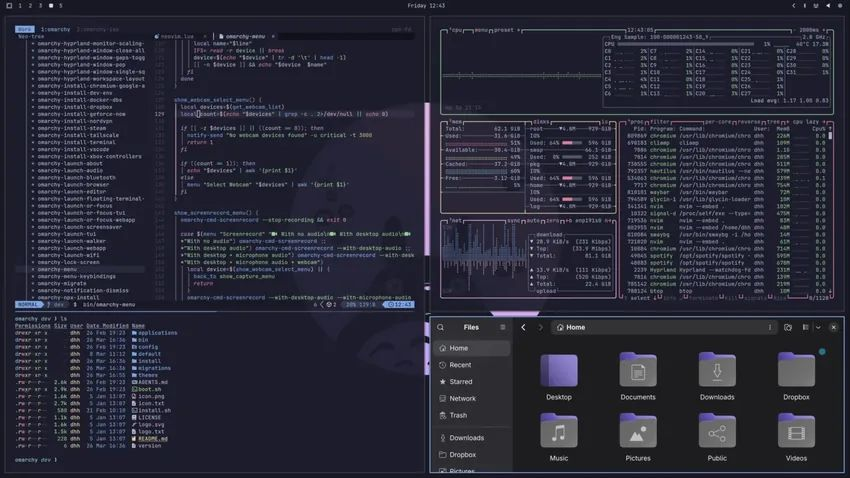
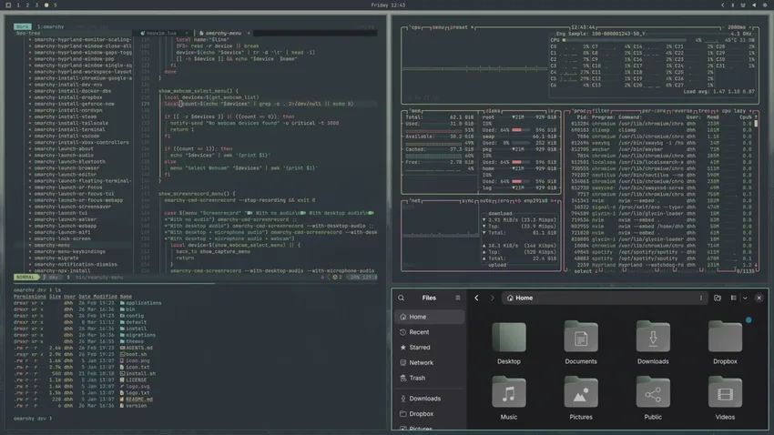
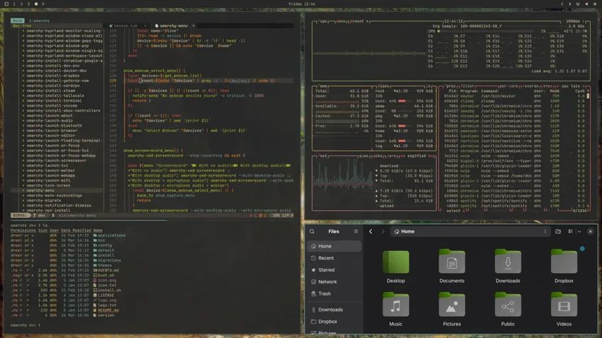
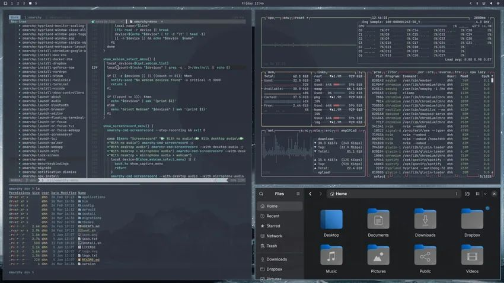
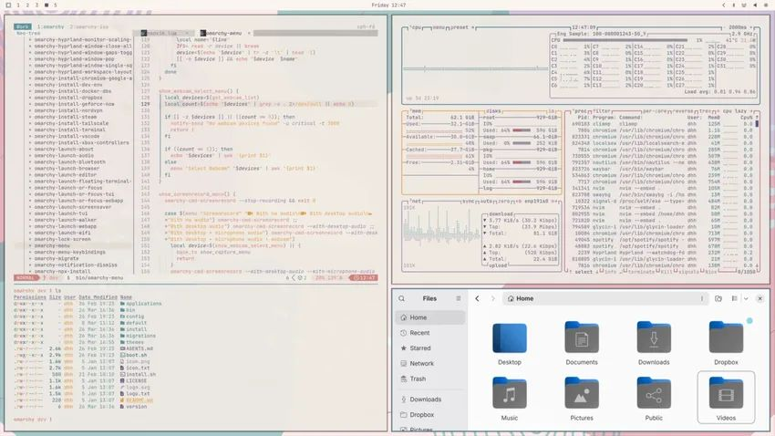
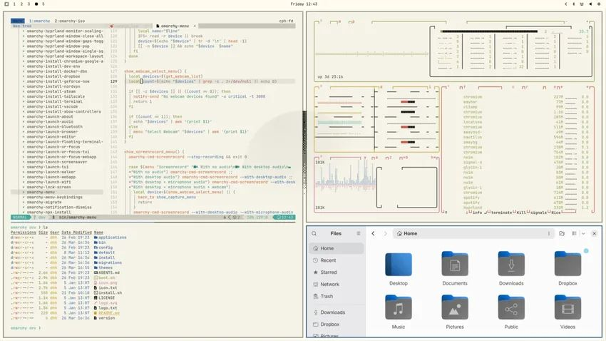
Captures : omarchy.org/manual/themes/
Tokyo Night, Catppuccin, Lumon, Ethereal, Everforest, Gruvbox, Miasma, Hackerman, Osaka Jade, Kanagawa, Nord, Matte Black, Vantablack, Ristretto, Retro 82, Flexoki Light, Rose Pine, Catppuccin Latte et White figurent parmi eux. Les trois derniers cités sont des thèmes clairs, si les fonds sombres ne vous conviennent pas.
Chaque thème est livré avec un jeu de fonds d’écran, entre lesquels on passe avec Super + Ctrl + Espace.
Un thème peut aussi proposer un habillage spécifique pour l’écran de déchiffrement au démarrage — celui qui apparaît avant même que le système ne se lance. On le choisit sous Style > Unlock.
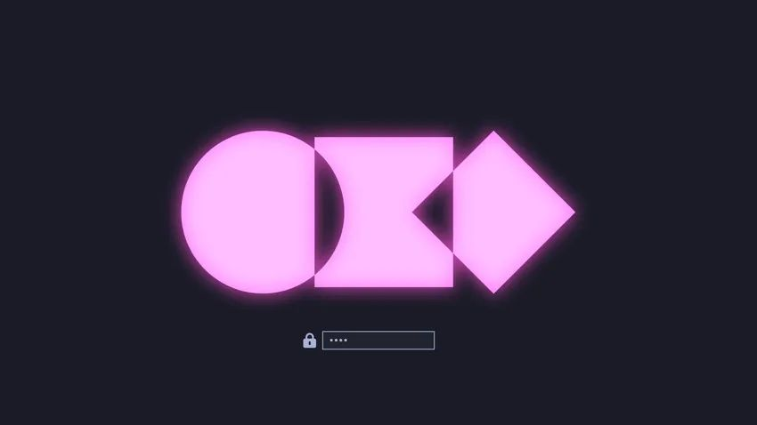
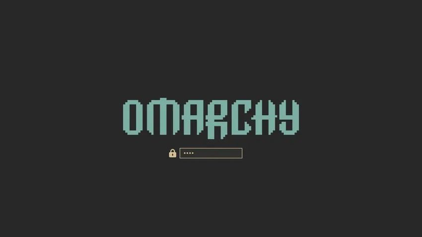
La page des thèmes supplémentaires sur omarchy.org en recense beaucoup d’autres, publiés par la communauté. On les installe par Install > Style > Theme en donnant l’adresse du dépôt git. Et le chapitre 22 explique comment fabriquer le vôtre.
Deux réglages courts, mais qu’on cherche toujours au mauvais endroit.
Les fonds sont rangés par thème. Les vôtres vont dans ~/.config/omarchy/backgrounds/<nom-du-thème>. Pour ajouter une image au thème nord, par exemple, déposez le fichier dans ~/.config/omarchy/backgrounds/nord.
Le plus simple : Install > Style > Background dans le menu ouvre directement le dossier des fonds du thème courant. Ouvrez alors un second gestionnaire de fichiers avec Super + Maj + F, retrouvez votre image, et copiez-la. Elle rejoint aussitôt les choix proposés par Super + Ctrl + Espace.
Le manuel officiel recommande la collection de fonds d’écran dharmx/walls sur GitHub, très fournie et bien assortie aux thèmes de type terminal.
Omarchy utilise JetBrainsMono Nerd Font comme police du terminal et du système. On en change par Style > Font, ce qui règle la police à chasse fixe partout : terminal, barre, et tout ce qui en demande une.
Pour en installer d’autres, Install > Style > Font propose Cascadia Mono, Meslo LG Mono, Fira Code, Victor Code, Bitstream Vera Mono et Iosevka — toutes dans leur version « Nerd Font », pour que les symboles de la barre et du terminal continuent de s’afficher. Une fois installée, sélectionnez-la sous Style > Font.
« Nerd Font » désigne une police enrichie de milliers de pictogrammes (icônes de fichiers, logos, symboles d’interface). Beaucoup d’outils en terminal s’en servent : si vous installez une police qui n’en est pas une, vous verrez des carrés vides à la place des icônes.
Attention à ne pas confondre. La police et la mise à l’échelle de l’écran sont deux choses distinctes : omarchy display text size 14 agrandit le texte du shell, des applications GTK et du terminal ensemble, sans toucher à la taille des fenêtres. C’est traité au chapitre 17.
Le réglage qui surprend le plus les nouveaux venus : pourquoi tout est énorme, et comment y remédier.
Omarchy suppose par défaut un écran « retina », capable d’un facteur 2 — c’est ce qu’il faut pour obtenir ces polices nettes et fines, et c’est ce vers quoi sont optimisés presque tous les portables haut de gamme récents. Si votre écran a une densité inférieure à 218 points par pouce, il faut changer ce réglage, sans quoi tout paraîtra démesuré.
Le fichier est ~/.config/hypr/monitors.lua, accessible par Setup > Monitors dans le menu.
Pour un écran 4K de 27 ou 32 pouces, la recommandation officielle est une mise à l’échelle fractionnaire :
local omarchy_gdk_scale = 2 local omarchy_monitor_scale = 1.6
Pour un écran 1080p ou 1440p, c’est la mise à l’échelle 1x qu’il faut :
local omarchy_gdk_scale = 1 local omarchy_monitor_scale = 1
Les changements de GDK_SCALE ne prennent effet que pour les applications lancées après la modification. Pensez donc à fermer les fenêtres devenues trop grandes — ou fermez-les toutes d’un coup avec Ctrl + Alt + Suppr. Par ailleurs, GTK n’accepte que des nombres entiers : gardez gdk_scale à l’entier le plus proche de votre monitor_scale.
Sans ouvrir de fichier, Super + / parcourt les principaux rapports de mise à l’échelle vers le haut (1x, 1,25x, 1,6x, 2x, 3x, 4x) et Super + Alt + / vers le bas. Avec la configuration par défaut, ces changements survivent au redémarrage.
La mise à l’échelle change la taille de tout. Si vous voulez uniquement du texte plus gros ou plus petit, il existe un réglage dédié :
omarchy display text size 14 # une taille en pixels, entre 9 et 20 omarchy display text size # affiche la valeur courante omarchy display text size reset # revient au réglage par défaut
Il déplace ensemble le shell Omarchy, les applications GTK et le terminal, pour que l’ensemble reste proportionné. Une seule exception : Foot n’a aucun moyen de recharger sa configuration, donc les terminaux déjà ouverts gardent leur ancienne taille jusqu’à ce que vous en ouvriez un nouveau.
Quand vous branchez un écran externe sur un portable, l’affichage est étendu automatiquement. Pour passer en duplication — utile avec un vidéoprojecteur, quand vous voulez montrer quelque chose tout en travaillant — utilisez Trigger > Hardware ou Super + Ctrl + Alt + Suppr.
En mode étendu, fermer le capot éteint automatiquement l’écran interne, et l’ouvrir le rallume. On peut aussi le piloter à la main par Trigger > Hardware ou Super + Ctrl + Suppr.
Les règles de position, définition et rotation vont dans ~/.config/hypr/monitors.lua, sous forme d’entrées hl.monitor. Le fichier livré contient des exemples commentés pour épingler un écran à une définition, une position et une rotation données. On peut également associer des espaces de travail précis à des écrans précis ; la documentation de Hyprland détaille cette possibilité.
Si positionner plusieurs écrans à la main dans un fichier vous rebute, le manuel officiel signale Hyprmon, un utilitaire en terminal qui aide à les placer visuellement.
Elle se règle avec les touches de fonction dédiées. Maj enfoncé les pousse au maximum ou au minimum, Alt permet des variations de 1 %. Ces touches agissent sur l’écran qui a le focus : un moniteur externe qui parle le DDC/CI se règle donc exactement comme l’écran du portable.
Sur un écran Apple (Studio Display ou XDR), les touches de luminosité du clavier fonctionnent aussi, via la commande asdcontrol, dès lors que le focus est sur cet écran. Sur un XDR 6K, un écran fantôme peut apparaître dans la liste hyprctl monitors ; on le désactive avec une ligne du type hl.monitor({ output = "DP-2", disabled = true }).
Le chapitre indispensable pour un clavier français — et pour récupérer la touche Verr. Maj.
Hyprland permet de régler finement tous les périphériques d’entrée. Tout se passe dans ~/.config/hypr/input.lua, accessible par Setup > Input dans le menu Omarchy. Ce que vous y écrivez remplace les valeurs par défaut d’Omarchy.
Omarchy est livré en disposition américaine. Le manuel officiel donne l’exemple suivant, qui déclare deux dispositions et permet de basculer de l’une à l’autre avec Alt gauche + Alt droit :
hl.config({
input = {
-- Deux dispositions, bascule par Alt gauche + Alt droit
kb_layout = "us,fr",
kb_options = "compose:caps,shift:both_capslock_cancel,grp:alts_toggle",
},
})
Pour n’avoir que le français, il suffit d’écrire kb_layout = "fr" et de retirer l’option grp:alts_toggle, qui ne sert qu’à basculer entre plusieurs dispositions.
Dès que plusieurs dispositions sont configurées, la barre du haut affiche automatiquement celle qui est active — et un clic dessus permet d’en changer. Ce petit indicateur n’apparaît pas tant qu’une seule disposition est déclarée.
L’ordre des dispositions compte au-delà du confort : quand vous verrouillez l’écran, Omarchy remet volontairement la première disposition de la liste, pour que vous ne tapiez pas votre mot de passe dans le mauvais alphabet. Placez donc en premier celle avec laquelle vous saisissez vos mots de passe.
Par défaut, Omarchy fait de Verr. Maj la touche de composition, celle qui donne accès aux émoji rapides et aux complétions de texte (chapitre 10). C’est la raison pour laquelle elle ne verrouille plus les majuscules, ce qui déroute et fait parfois croire à une panne.
Pour déplacer la touche de composition ailleurs — sur Alt droit par exemple — modifiez compose:caps :
hl.config({
input = {
kb_options = "compose:ralt",
},
})
Voici un exemple complet, repris du manuel officiel, qui montre les réglages les plus utiles :
hl.config({
input = {
-- Vitesse de répétition des touches
repeat_rate = 40,
repeat_delay = 600,
-- Sensibilité de la souris et du pavé tactile (défaut : 0)
sensitivity = 0.35,
touchpad = {
-- Défilement naturel (inversé)
natural_scroll = true,
-- Clic à deux doigts pour le clic droit, au lieu du coin inférieur droit
clickfinger_behavior = true,
-- Vitesse de défilement
scroll_factor = 0.3,
},
},
})
-- Défiler plus vite dans le terminal
o.window("(Alacritty|kitty|foot)", { scroll_touchpad = 1.5 })
On peut activer les gestes, par exemple le balayage à trois doigts pour changer d’espace de travail :
hl.gesture({ fingers = 3, direction = "horizontal", action = "workspace" })
Sur les portables Dell XPS à pavé haptique, la force du clic se règle sur bas, moyen ou fort sous Trigger > Hardware > Touchpad Haptics.
Sur certains claviers, la touche méta principale est mal placée. On peut la permuter avec Alt :
hl.config({
input = {
kb_options = "compose:caps,shift:both_capslock_cancel,altwin:swap_alt_win",
},
})
Omarchy fait tourner le cadre de saisie fcitx5 dans chaque session — c’est lui qui anime les séquences de composition de Verr. Maj. La plomberie pour les écritures non latines est donc déjà en place : il suffit d’installer un moteur de saisie, par exemple fcitx5-mozc pour le japonais ou fcitx5-chinese-addons pour le chinois, avec omarchy pkg add, plus fcitx5-configtool pour ajouter le moteur à vos méthodes de saisie et choisir la touche de bascule.
Un chapitre court, parce que le réglage l’est aussi.
Omarchy est livré avec une invite Starship volontairement minimale. Le manuel officiel en explique le raisonnement : pas besoin d’afficher le nom d’utilisateur, puisque c’est toujours vous ; pas besoin de l’heure, puisqu’elle est déjà en haut de l’écran.
Si vous préférez une invite plus riche ou plus décorée, tout se configure dans ~/.config/starship.toml. Starship offre énormément de possibilités : indicateur de branche git, version du langage du projet courant, durée de la dernière commande, code de sortie, et bien d’autres.
Une invite chargée coûte quelques millisecondes à chaque affichage. Si votre terminal devient perceptiblement lent après avoir ajouté beaucoup de modules, c’est généralement le premier endroit où regarder.
Écran de déchiffrement, économiseur d’écran, écran « À propos » : trois endroits qui acceptent votre image.
Cette possibilité vise surtout les machines d’entreprise — mais rien n’empêche de s’en servir pour son usage personnel.
On prévisualise avant d’appliquer. La commande prend une couleur de fond, une couleur de texte, un logo PNG et un chemin pour l’image de prévisualisation :
omarchy plymouth preview '#1d2021' '#ebdbb2' logo.png preview.png
Puis on applique, ce qui donne aussi à l’écran de connexion SDDM les mêmes couleurs et le même logo :
omarchy plymouth set '#1d2021' '#ebdbb2' logo.png omarchy plymouth reset # pour revenir en arrière
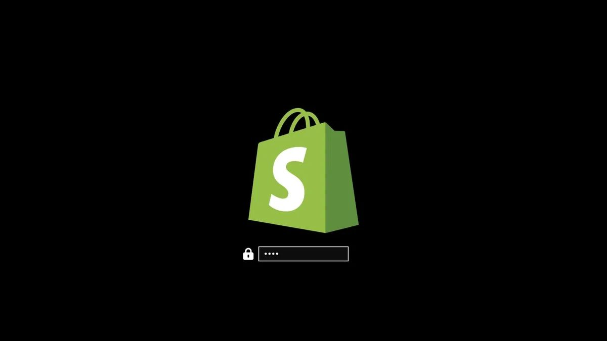
Le logo de l’économiseur se change sous Style > Screensaver. Comme c’est un logo en art ASCII, on peut en éditer le texte directement, mais aussi fournir une image PNG ou SVG qu’Omarchy convertit. Trois entrées :
~/.config/omarchy/branding/screensaver.txt dans votre éditeur. Tapez ou collez ce que vous voulez ; à l’enregistrement, l’économiseur se lance aussitôt pour que vous voyiez le résultat.Les trois mêmes options existent sous Style > About, pour l’écran About du menu Omarchy. Le fichier est ~/.config/omarchy/branding/about.txt, et la fenêtre s’ouvre après chaque modification. L’art y est converti à une taille plus petite que pour l’économiseur, puisqu’il doit tenir dans une fenêtre.
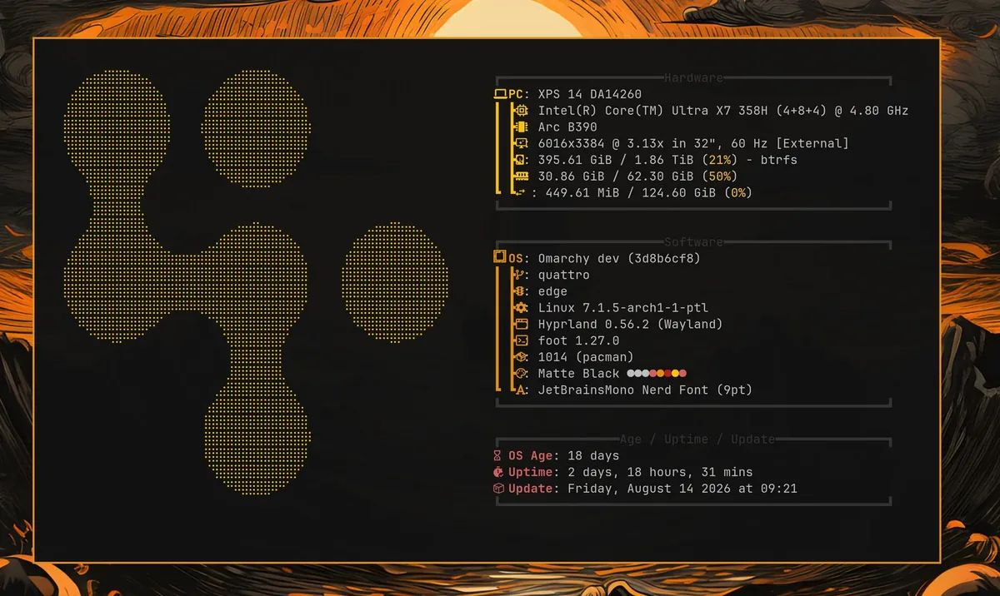
Les deux options Set From Image appellent simplement omarchy transcode ascii, que l’on peut lancer directement pour garder la main sur la conversion :
omarchy transcode ascii ~/logo.svg ~/.config/omarchy/branding/screensaver.txt --width 100
Les options : --width et --height en colonnes et lignes de terminal, --mode valant braille (le défaut, bien plus fin) ou block, un --threshold en pourcentage qui décide quels pixels font partie du logo, et --invert quand le logo est clair sur fond sombre. Si la conversion donne une tache informe, c’est presque toujours le seuil qu’il faut ajuster.
Coins arrondis, espaces entre fenêtres, icônes de la zone de notification : les trois ajustements que tout le monde finit par chercher.
Il peut arriver qu’une mise à jour système doive rétablir certaines configurations dans leur état d’origine. Vos modifications ne sont pas perdues pour autant : elles sont déposées dans un fichier .bak situé dans le même dossier.
Par défaut, les icônes de la zone de notification — Dropbox, 1Password, Steam — sont masquées derrière une flèche d’expansion qui les révèle au survol. Pour en garder certaines visibles en permanence, faites un clic droit sur cette flèche : le gestionnaire d’icônes s’ouvre, et vous pouvez y épingler celles que vous voulez voir (ou masquer celles que vous ne voulez jamais voir).
Le parti pris d’Omarchy est celui des angles droits. Pour adoucir cela, éditez ~/.config/hypr/looknfeel.lua et décommentez la section correspondante :
hl.config({
decoration = {
-- Coins de fenêtre arrondis.
rounding = 8,
},
})
Sur un écran de portable, certains préfèrent ne perdre aucun pixel en espaces entre fenêtres — voire supprimer la barre du haut, ce que fait Super + Maj + Espace. Pour une bascule ponctuelle, Super + Maj + Retour arr. supprime espaces et bordures. Pour les retirer définitivement, décommentez dans ~/.config/hypr/looknfeel.lua :
hl.config({
general = {
-- Ni espaces entre les fenêtres, ni bordures.
gaps_in = 0,
gaps_out = 0,
border_size = 0,
},
})
Si vous avez fait des dégâts, Update > Config dans le menu Omarchy restaure les configurations individuelles dans leur état d’origine. Et en cas de dégâts vraiment sérieux, omarchy reinstall configs réinitialise l’ensemble — en écrasant, cette fois, toutes vos personnalisations.
Partir d’un thème existant, changer une poignée de couleurs, et l’avoir dans le sélecteur.
Vos thèmes vivent dans ~/.config/omarchy/themes. La méthode la plus simple consiste à copier l’un des thèmes livrés — ils se trouvent dans /usr/share/omarchy/themes — puis à le modifier. Tant que votre thème est dans ce dossier, il apparaît dans le menu de sélection.
Le fichier principal à retoucher est colors.toml. Il définit le jeu de couleurs à partir duquel sont ensuite générées les configurations du terminal (Foot, Alacritty, Ghostty, Kitty), de btop, de Chromium, de Hyprland, de Neovim, de Helix, de VSCode, d’Obsidian, et de tout le shell Omarchy — barre, menu, notifications, bulles et écran de verrouillage.
Pour un thème en mode clair, ajoutez mode = "light" en tête de votre colors.toml. Le mode clair sera alors automatiquement appliqué à toutes les applications concernées.
Pour accorder les icônes du gestionnaire de fichiers à votre thème, ajoutez un fichier nommé icons.theme contenant le nom du jeu d’icônes souhaité. Les valeurs disponibles par défaut sont : Yaru, Yaru-blue, Yaru-dark, Yaru-magenta, Yaru-olive, Yaru-prussiangreen, Yaru-purple, Yaru-red, Yaru-sage, Yaru-wartybrown et Yaru-yellow.
Un thème fourni avec des images unlock.png et preview-unlock.png apparaît sous Style > Unlock. Le fichier unlock.png gagne à être un PNG à fond transparent, et l’image de prévisualisation se fabrique avec omarchy plymouth preview (chapitre 20).
C’est le mécanisme le plus intéressant du système de thèmes. Vous pouvez apprendre à Omarchy à habiller n’importe quelle application, au moyen d’un gabarit. Déposez dans ~/.config/omarchy/themed/ un fichier nommé d’après la configuration qu’il doit produire, suivi de l’extension .tpl, et écrivez cette configuration en utilisant des marqueurs :
{{ background }}, {{ foreground }}, {{ accent }}, {{ red }}, {{ color0 }} à {{ color15 }}, et le reste de la palette. À chaque changement de thème, le fichier est régénéré avec les couleurs du nouveau thème.
Un exemple entièrement commenté, alacritty.toml.tpl.sample, se trouve dans ce dossier : il liste toutes les variables disponibles, ainsi que les modificateurs _strip et _rgb pour les applications qui veulent leurs couleurs sans le # ou en RVB décimal.
Vos gabarits sont prioritaires sur ceux d’Omarchy. Vous pouvez donc aussi vous en servir pour remplacer la façon dont une application intégrée est habillée, sans toucher aux fichiers du système.
L’application Aether, livrée avec Omarchy, extrait les couleurs d’une image de fond et en fait un thème complet et cohérent. C’est de loin la façon la plus simple de créer le sien. Elle se lance depuis le menu des applications (Super + Alt + Espace).
Pour que d’autres puissent l’installer, publiez-le sur un serveur git public comme GitHub. Les utilisateurs l’installeront alors par Install > Style > Theme en donnant l’URL. La convention de nommage recommandée est omarchy-[nomduthème]-theme : le thème apparaîtra alors simplement comme [nomduthème] dans le menu de sélection.
Presque tout ce que vous voyez à l’écran est un plugin. On peut donc en désactiver, en remplacer, ou en écrire.
Le bureau Omarchy est un unique processus Quickshell de longue durée, nommé omarchy-shell. La barre est un plugin. Les panneaux qui en descendent aussi. Les surcouches plein écran comme le sélecteur d’émoji et le gestionnaire de presse-papiers, le menu Omarchy lui-même, l’écran de verrouillage, la boîte de dialogue d’autorisation, et les services sans interface qui surveillent la batterie ou réchauffent l’écran le soir : tous sont des plugins.
Ce n’est pas un simple détail d’implémentation. Cela veut dire que vous pouvez éteindre des morceaux du bureau, en remplacer, ou écrire les vôtres sans toucher une ligne du code d’Omarchy.
Les plugins livrés avec le système se trouvent dans $OMARCHY_PATH/shell/plugins/. Ceux que vous ajoutez vivent dans ~/.config/omarchy/plugins/. Les deux sont découverts de la même façon au démarrage ; seul l’emplacement sur le disque diffère.
omarchy plugin list
La commande affiche chaque plugin découvert avec son identifiant, son état (activé ou non), son origine (livré ou tiers), ses types et son nom d’affichage. Ajoutez --json pour l’exploiter dans un script.
Les identifiants sont préfixés. Ceux d’origine commencent tous par omarchy. — omarchy.clock, omarchy.network, omarchy.notifications — et cet espace de noms est réservé : un plugin tiers ne peut jamais le revendiquer.
omarchy plugin enable omarchy.tailscale omarchy plugin disable omarchy.weather
Ou par le menu : Setup > Plugins propose Enable, Disable, Add, Clone et Remove, chacun avec un sélecteur qui ne montre que les plugins pertinents pour l’action.
L’état est enregistré dans ~/.config/omarchy/shell.json, avec une règle légèrement différente selon l’origine. Un plugin tiers est activé exactement lorsque son identifiant figure quelque part dans ce fichier. Les plugins d’origine qui ne sont pas des éléments de barre fonctionnent à l’inverse : ils sont actifs par défaut et ne se désactivent qu’en étant listés dans disabledPlugins[].
Un plugin tiers est simplement un dépôt git contenant un fichier manifest.json à sa racine.
omarchy plugin add https://github.com/acme/omarchy-weather.git --enable
Avant de faire quoi que ce soit, la commande vous prévient explicitement : un plugin est du code arbitraire, non isolé, qui s’exécute à l’intérieur de votre processus shell pour toute la durée de votre session, avec tous les droits de votre compte utilisateur. Elle affiche l’URL et demande confirmation. Prenez cet avertissement au sérieux : un plugin n’est pas un fichier de configuration. N’ajoutez que des dépôts que vous acceptez d’exécuter, et lisez-les avant de les activer.
L’installation elle-même est prudente : le dépôt est cloné dans un répertoire temporaire, le manifeste est validé, l’installation est refusée si un autre plugin revendique déjà cet identifiant, puis le dossier est déplacé vers ~/.config/omarchy/plugins/<id>/. Sans --enable, on vous demande si vous voulez l’activer tout de suite, et vous pouvez répondre non pour aller d’abord lire le code. La commande n’exécute jamais rien du plugin, ne lance aucun script d’installation, et ne demande jamais sudo.
omarchy plugin update acme.weather # un seul omarchy plugin update # tous ceux gérés par git omarchy plugin remove acme.weather
La mise à jour est une avance rapide du dépôt : elle vous montre les changements avant de les appliquer, refuse d’agir si vous avez des modifications locales qui l’en empêchent, et revient en arrière si la nouvelle révision échoue à la validation.
La suppression désactive d’abord le plugin, puis le supprime s’il s’agit d’un dépôt git (le code reste disponible en amont) ou le délie si c’est un lien symbolique. Un dossier fabriqué à la main, sans dépôt git, est déplacé vers une sauvegarde horodatée plutôt que supprimé.
C’est la manière propre de changer le comportement d’un élément livré : n’éditez pas les fichiers sous $OMARCHY_PATH, ils appartiennent au paquet et la prochaine mise à jour les écrasera. Clonez-les :
omarchy plugin clone omarchy.clock
Le plugin entier est copié dans ~/.config/omarchy/plugins/<votre-nom>.clock, renommé « My Clock », activé, et le shell bascule du plugin d’origine vers votre copie — en conservant la position et les réglages de l’élément de barre existant. L’option --edit ouvre immédiatement le nouveau dossier dans votre éditeur, ce que fait aussi Setup > Plugins > Clone Plugin.
Le préfixe à votre nom d’utilisateur garantit que l’identifiant de votre copie vous appartient, donc que la partager n’entrera en collision avec personne. Les appels adressés à l’identifiant d’origine sont redirigés vers votre clone. Et si vous faites n’importe quoi, omarchy plugin remove <votre-nom>.clock remet celui d’origine.
Enregistrer un fichier sous ~/.config/omarchy/plugins/ recharge automatiquement le code du plugin : vous pouvez laisser l’éditeur ouvert et regarder vos modifications s’appliquer.
Un plugin est un dossier avec un manifest.json et du QML. Le manifeste déclare schemaVersion: 1, un id, un name, une version, un ou plusieurs kinds, et un objet entryPoints désignant le fichier QML de chaque type.
| Type | Ce que c’est |
|---|---|
bar-widget | Un composant que la barre active peut déposer dans une section |
panel | Une fenêtre flottante, permanente ou invoquée |
overlay | Une surcouche plein écran |
menu | Une surface de menu invoquée |
service | Un singleton sans interface |
bar | Une barre complète qui remplace celle d’origine |
Un plugin peut déclarer plusieurs types à la fois — le plugin média est à la fois un service et un bar-widget. Avant de publier :
omarchy plugin validate ./mon-plugin
La commande effectue les mêmes vérifications que le shell au chargement : version de schéma, champs obligatoires, identifiant non réservé, points d’entrée en chemins relatifs sûrs et réellement présents, un point d’entrée pour chaque type déclaré, et aucun lien symbolique dans le dossier.
Publiez-le dans un dépôt git public : c’est tout le mécanisme de distribution. N’importe qui peut alors lancer omarchy plugin add sur votre URL. Pour qu’on le trouve, référencez-le sur omarchyplugins.com, l’annuaire communautaire des plugins — le premier endroit à consulter, aussi, avant d’écrire un composant que quelqu’un a peut-être déjà fait.
Le terminal, l’éditeur, les navigateurs, les applications, les outils de développement, les agents IA et même les jeux : ce qu’Omarchy livre, et comment s’en servir.
Foot par défaut, Tmux pour les onglets et les sessions qui survivent, et des dispositions de travail toutes prêtes.
Le terminal par défaut d’Omarchy est Foot : rapide, léger, compatible même avec des machines anciennes. Il ne gère en revanche ni onglets ni divisions natives.
Si vous utilisez Tmux, cela ne vous gênera pas. Sinon, Omarchy prend aussi en charge Alacritty, Ghostty et Kitty : choisissez sous Install > Terminal.
Super + Entrée ouvre un nouveau terminal. Ce raccourci pointe automatiquement vers celui que vous avez installé, et l’on bascule entre les terminaux installés sous Setup > Defaults > Terminal.
Tmux offre une interface cohérente et programmable pour les panneaux, les fenêtres (l’équivalent des onglets) et les sessions que l’on peut quitter puis reprendre. Il fonctionne aussi sur les machines distantes : en SSH sur un serveur, vous retrouvez la même façon de travailler.
Super + Alt + Entrée ouvre un terminal avec une nouvelle session Tmux. Comme Tmux est un processus persistant, la session survit à la fermeture du terminal : Ctrl + Espace (la touche dite préfixe) suivi de s affiche toutes vos sessions actives.
La touche préfixe est Ctrl + Espace, mais Ctrl + B — le préfixe historique de Tmux — fonctionne aussi. Les associations se modifient dans ~/.config/tmux/tmux.conf. Toutes sont visibles avec Super + Alt + K, et l’annexe A en donne la liste.
Parce que Tmux est programmable, Omarchy livre des fonctions qui construisent des dispositions courantes d’un seul mot.
tdl [agent] crée une interface à trois panneaux, façon environnement de développement : votre éditeur ($EDITOR) à gauche, l’agent IA de votre choix à droite, et un terminal en bas. Les alias d’agent sont courts : c pour OpenCode, cx pour Claude Code, codex pour celui d’OpenAI. tdl c donne donc la disposition ci-dessous.
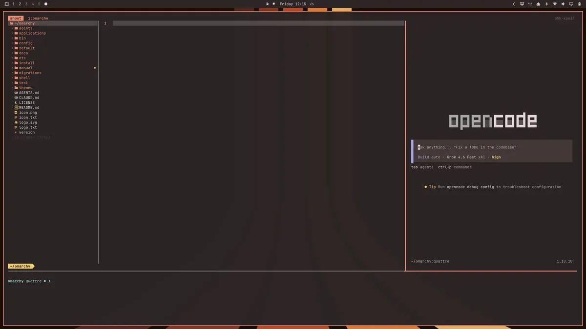
tdl c : éditeur à gauche, agent à droite, terminal en bas. Source : omarchy.org/manual/terminal/On peut lancer deux agents à la fois avec tdl c cx. Il existe également tds, qui produit un carré à quatre panneaux : éditeur en haut à gauche, observateur de différences en haut à droite, terminal en bas à gauche, agent en bas à droite.
tdlm [agent] crée une fenêtre tdl pour chaque sous-répertoire du dossier courant, entre lesquelles on navigue avec Alt + 1, 2, 3…
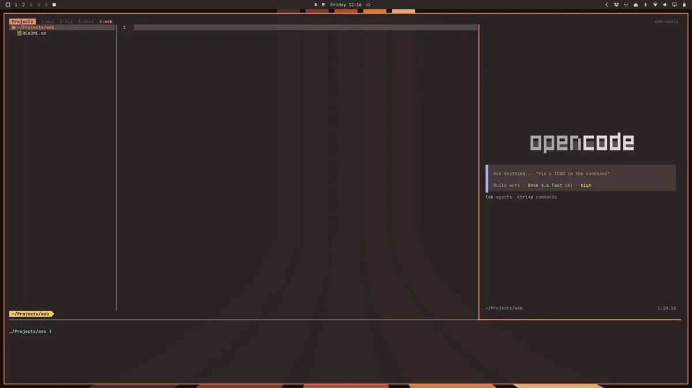
tdlm : une fenêtre de travail complète par sous-répertoire. Source : omarchy.org/manual/terminal/Enfin, tsl [nombre] [commande] lance un essaim : tsl 4 c donne une grille de quatre agents OpenCode.
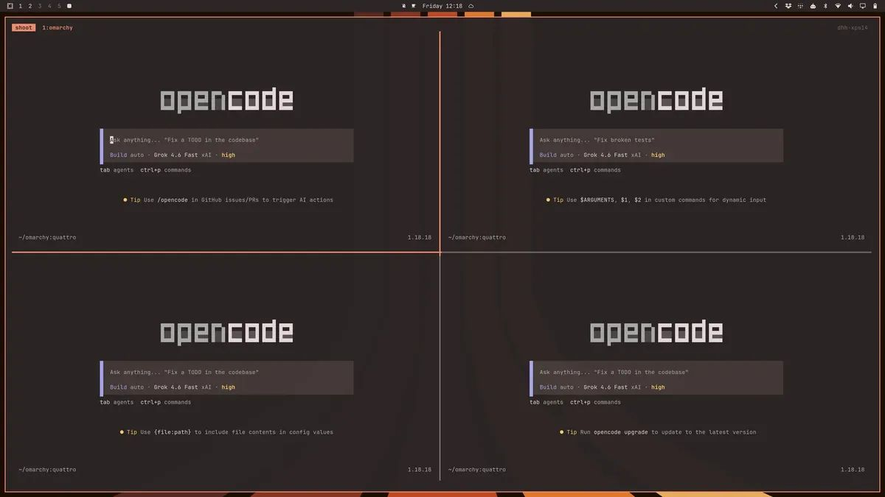
tsl 4 c : quatre panneaux identiques en grille. Source : omarchy.org/manual/terminal/Les mêmes dispositions existent pour Herdr, l’autre gestionnaire de session livré, sous les noms hdl, hds, hdlm et hsl (chapitre 28).
L’éditeur livré avec Omarchy, entièrement configuré. Une courbe d’apprentissage réelle, et une récompense à la hauteur.
Neovim est une réécriture moderne de l’éditeur vi, créé par Bill Joy en 1976. C’est un éditeur modal : le mode insertion et le mode commande sont séparés, ce qui déroute au début et devient une force considérable dès qu’on en maîtrise ne serait-ce qu’une partie.
Soyons honnêtes, comme l’est le manuel officiel : contrairement aux éditeurs plus courants, il faut plus de temps pour atteindre une aisance de base avec vim. Mais le gain, ensuite, est aussi plus grand. Si vous débutez complètement, ce n’est pas la bataille à mener pendant votre première semaine sous Omarchy — installez plutôt un éditeur familier (chapitre 32) et revenez à Neovim plus tard.
Omarchy livre une configuration Neovim complète — le paquet omarchy-nvim — bâtie sur LazyVim, une distribution de greffons et de réglages. Vous n’avez pas une ligne de configuration à écrire.
Neovim a la notion de touche leader, la porte d’entrée de toutes les commandes. LazyVim la fixe à Espace : appuyez, attendez une seconde, et un menu d’options s’affiche avec ses explications.
| Raccourci | Effet |
|---|---|
| Espace Espace | Recherche approximative d’un fichier dans le dossier courant |
| Espace S G | Recherche dans le contenu de tous les fichiers, avec aperçu |
| Espace E | Affiche ou masque l’arborescence de fichiers |
| Ctrl + W W | Passe de l’arborescence à l’éditeur et inversement |
| Maj + H / L | Onglet précédent / suivant (vim les appelle des buffers) |
| Espace B D | Ferme l’onglet courant |
| Espace B O | Ferme tous les autres onglets |
| Espace G G | Ouvre LazyGit dans un panneau flottant |
| Espace U W | Active ou désactive le retour à la ligne automatique |
Dans l’arborescence de fichiers (Espace E pour l’afficher, Ctrl + W W pour y aller), a ajoute un fichier, Maj + A un dossier, d supprime, m déplace et r renomme. ? affiche toutes les commandes disponibles.
Super + Maj + N ouvre votre éditeur par défaut, Neovim d’origine. Mais le plus commode est de le piloter depuis le terminal : placez-vous dans le dossier de travail et tapez n. C’est l’alias de nvim, qui ouvre le dossier courant. n monfichier.txt ouvre un fichier précis.
Pour modifier un fichier qui demande les droits d’administrateur tout en gardant votre configuration et vos greffons, utilisez sudoedit plutôt que sudo nvim :
sudoedit /etc/sudoers.d/00-mon-fichier
Le manuel officiel recommande, pour apprendre vim, la série Vim As Your Editor de ThePrimeagen sur YouTube ; et pour construire sa propre configuration à partir de rien, les cours de Typecraft et de ThePrimeagen. La page LazyVim Keymaps recense l’ensemble des raccourcis configurés par LazyVim.
Neuf remplaçants modernes des commandes Unix classiques, déjà installés et déjà associés à leurs alias.
Outre les outils Linux standards, Omarchy livre une série d’outils améliorés. Il vaut la peine de les connaître, ne serait-ce que parce que certains ont déjà remplacé leur équivalent classique derrière le même nom.
fzf permet de retrouver un fichier par frappe approximative, via l’alias ff. Placez-vous dans un dossier, tapez ff, et vous naviguez jusqu’à n’importe quel fichier de l’arborescence, avec un aperçu du contenu à droite pendant que vous affinez.
Ctrl + R l’utilise pour chercher dans votre historique de commandes. C’est aussi lui qui travaille dans Neovim quand vous tapez Espace Espace. Manuel complet : man fzf.
cd qui se souvientZoxide remplace cd en mémorisant les dossiers que vous avez visités. Si vous avez fait cd ~/.config/omarchy une fois, la fois suivante cd omarchy — voire cd oma — vous y amène directement. Manuel : man zoxide.
rg <motif> <chemin> cherche dans le contenu des fichiers : rg Controller app/ trouve toutes les occurrences de Controller dans le dossier app. C’est aussi l’outil que Neovim emploie pour Espace S G. Manuel : man rg.
ls en couleurseza remplace ls et donne des listes plus informatives, colorées, avec des icônes. Il est déjà associé à l’alias ls, donc vous l’utilisez sans le savoir. Trois autres alias : lt pour deux niveaux d’imbrication, lsa pour inclure les fichiers cachés, lta pour les deux à la fois. Manuel : man eza.
find utilisablefd person.rb trouve un fichier nommé person.rb dans l’arborescence courante. fd person.rb / cherche dans tout le système de fichiers, et l’option -H y ajoute les dossiers cachés. Manuel : man fd.
cat avec colorationbat monfichier.rb affiche le fichier avec coloration syntaxique, numéros de ligne et pagination. Il travaille aussi discrètement ailleurs : c’est lui qui colore vos pages de manuel et qui produit les aperçus de ff. Manuel : man bat.
tldr tar donne les quelques invocations que vous cherchiez réellement, au lieu de trois écrans d’histoire du format avant le premier exemple.
yt-dlp <url> récupère la meilleure qualité disponible dans le dossier courant, depuis YouTube et des centaines d’autres sites. Manuel : man yt-dlp.
try gère les petites expérimentations de programmation dans des dossiers horodatés. Toutes vivent dans ~/Work/tries.
Des raccourcis pour les commandes dont personne ne retient les paramètres.
compress [fichier/dossier] | Crée une archive tar.gz. |
decompress [fichier.tar.gz] | Décompresse une archive tar.gz. |
iso2sd [image.iso] | Crée un support amorçable à partir d’une image ISO, en choisissant le disque de façon interactive. |
format-drive [disque] [nom] | Formate un disque entier en une seule partition exFAT — lisible aussi sous Windows et macOS. Lancée sans argument, la commande liste les disques disponibles. |
format-drive efface l’intégralité du disque désigné. Lancez-la toujours d’abord sans argument pour voir la liste, et vérifiez deux fois le nom du périphérique avant de valider.
tdl [agent] | Éditeur, agent IA et terminal. Un deuxième agent peut être passé : tdl c cx. |
tds | Carré à quatre : éditeur, suivi des différences, terminal, agent. |
tdlm [agent] | Une fenêtre tdl par sous-répertoire du dossier courant. |
tsl [n] [commande] | Un essaim de n panneaux en grille, tous exécutant la même commande. |
Les mêmes existent pour Herdr : hdl, hds, hdlm, hsl.
ga [branche] | Crée un arbre de travail et une branche à côté du dépôt courant, et s’y place. |
gd | Supprime l’arbre de travail courant et sa branche (avec confirmation). |
rsw [source] [destination] | Lance en arrière-plan une surveillance qui synchronise la source vers la destination à chaque modification. La destination peut être une machine distante : rsw ~/Work/app nyc-dev:Work/app. |
lsw | Liste les surveillances actives. |
dsw | Arrête toutes les surveillances. |
fip | Redirige un ou plusieurs ports d’une machine distante vers localhost. |
dip | Coupe une ou plusieurs redirections. |
lip | Liste les redirections actives. |
L’intérêt : si un serveur de développement tourne sur le port 3000 d’une machine nommée nyc-dev, alors fip nyc-dev 3000 fait que localhost:3000 atteint réellement nyc-dev:3000 — sans avoir besoin de certificats TLS pour obtenir le « contexte sécurisé » qu’exigent les WebSockets et quelques autres API du navigateur.
La commande ssh elle-même est enveloppée dans une fonction : elle nettoie le terminal si la connexion meurt alors qu’un Tmux, un Herdr ou un éditeur distant l’avait accaparé, puis se reconnecte automatiquement quand une session interactive tombe. Ctrl + C interrompt la boucle de reconnexion.
Vos propres alias, fonctions et variables d’environnement vont dans ~/.bashrc. Ce fichier n’est jamais écrasé par une mise à jour, et vous pouvez y redéfinir sans risque n’importe quel réglage par défaut d’Omarchy.
Des interfaces complètes, navigables au clavier, dessinées en caractères. Elles sont souvent meilleures que leur équivalent graphique.
Lazygit est une alternative très réussie à une application comme GitHub Desktop, mais qui tourne dans le terminal. Lancez-le depuis n’importe quel dossier suivi par git en tapant lazygit, ou depuis Neovim avec Espace G G.
Tab passe d’un panneau à l’autre. Dans le panneau des fichiers, Espace sélectionne un fichier pour l’indexation, puis c crée un commit. ? affiche toutes les commandes.
Dans le même esprit, pour gérer conteneurs et images. Super + Maj + D le lance. s arrête un conteneur, r le démarre ou le redémarre, ? montre le reste.
Btop affiche mémoire, processeur, disque et réseau, liste les processus actifs et permet de les gérer. Omarchy l’appelle Activity et le lance avec Super + Ctrl + T. Il s’ouvre en fenêtre flottante, que Super + T intègre au pavage si vous préférez.
Herdr est un gestionnaire d’espaces de travail en terminal : espaces, onglets et panneaux, tous maintenus dans une session persistante que l’on peut quitter et retrouver plus tard. Super + Ctrl + Entrée le démarre ou vous rattache à votre session existante.
Omarchy livre une configuration Herdr calquée sur sa configuration Tmux : la touche préfixe y est donc aussi Ctrl + Espace. Super + Ctrl + K affiche tous ses raccourcis.
Fastfetch affiche version du noyau, temps de fonctionnement, thème, processeur, mémoire et davantage. C’est le successeur du populaire neofetch, et Omarchy l’a empaqueté sous le nom About dans son menu.
Quand le disque se remplit sans qu’on sache pourquoi, lancez Disk Usage depuis le lanceur d’applications. C’est l’outil dua en mode interactif, pointé sur l’ensemble du système de fichiers : vous descendez dans le dossier coupable, trié du plus gros au plus petit, et vous pouvez supprimer directement depuis l’interface.
Cliamp est un lecteur de musique rétro en terminal, inspiré de Winamp 2, avec des radios lo-fi intégrées. Super + Maj + Alt + M le lance. ? affiche ses raccourcis.
Vous ne trouverez pas d’application en terminal pour eux : ces tâches appartiennent au shell Omarchy. Cliquez l’icône Wi-Fi dans la barre (ou Super + Ctrl + W) pour voir les réseaux et vous connecter, et l’icône Bluetooth (ou Super + Ctrl + B) pour appairer un appareil. Voir le chapitre 42.
N’importe quel programme en terminal peut recevoir le même traitement qu’une vraie application. Allez dans Install > TUI, donnez un nom, une commande de lancement, un style de fenêtre et une icône : le programme apparaîtra dans le lanceur comme toute autre application. On le retire ensuite par Remove > TUI.
Ce qui est déjà installé, et par quel raccourci l’atteindre.
C’est Nautilus. Super + Maj + F l’ouvre, et Super + Maj + Alt + F l’ouvre dans le dossier où se trouve votre terminal, ce qui épargne beaucoup de clics. Ctrl + L permet de taper un chemin, et Espace sur un fichier en donne un aperçu rapide sans rien ouvrir.
Une clé USB ou une carte SD branchée est montée automatiquement et apparaît dans la barre latérale. Pour tout ce qui est plus impliqué — formater, vérifier la santé SMART, créer des partitions — lancez Disks depuis le lanceur.
Le double-clic suit des choix par défaut sensés : les images s’ouvrent dans imv, les vidéos dans mpv, les PDF dans Document Viewer, et le texte brut dans Neovim.
LocalSend envoie des fichiers vers d’autres appareils du même réseau qui font tourner l’application. Contrairement à AirDrop, il est multiplateforme : Windows, macOS, Android, iOS et Linux.
Super + Ctrl + S ouvre le menu de partage, qui propose quatre options :
omarchy share clipboard omarchy share file [chemin] omarchy share folder [chemin]
On peut aussi envoyer directement depuis le gestionnaire de fichiers : clic droit sur une sélection, puis Send via LocalSend.
Le pare-feu d’Omarchy est fermé par défaut sauf pour le port de LocalSend : cela fonctionne donc sans configuration sur une installation neuve (chapitre 46).
| Application | Ce qu’elle fait · Comment la lancer |
|---|---|
| Obsidian | Prise de notes extensible, stockée en simples fichiers Markdown. Gratuite pour tout usage, y compris commercial. Super+Maj+O. |
| Omawrite | L’éditeur Markdown minimaliste d’Omarchy : ni coffres, ni greffons, juste le texte. Super+Maj+W. |
| Omacalc | La calculatrice d’Omarchy, en fenêtre flottante. Super+Ctrl+Q, ou la touche calculatrice du clavier. |
| LibreOffice | Suite bureautique complète, compatible avec les fichiers Microsoft Office. Depuis le lanceur. |
| Pinta | Retouche d’image simple : recadrage, redimensionnement, baguette magique, calques. Depuis le lanceur. |
| Aether | Crée un thème complet à partir des couleurs d’une image de fond (chapitre 22). Depuis le lanceur. |
| mpv | Lecteur multimédia rapide qui lit à peu près tout. Depuis le lanceur, ou par double-clic sur une vidéo. |
| OBS Studio | Enregistrement et diffusion vidéo multi-sources. Depuis le lanceur. |
| Kdenlive | Montage vidéo complet. Depuis le lanceur. |
| Omacut | Le découpeur vidéo minimaliste d’Omarchy : quand il s’agit juste de couper le début et la fin d’un clip. Depuis le lanceur. |
| Signal | Messagerie chiffrée de bout en bout. Super+Maj+G — le raccourci propose l’installation si elle n’est pas faite. |
Chromium par défaut, six autres possibles, et deux extensions qui débordent du navigateur.
Omarchy livre Chromium comme navigateur par défaut : la version libre pure, habillée aux couleurs de votre thème. C’est ce qu’ouvre Super + Maj + Entrée, et c’est aussi le moteur de toutes les applications web (chapitre 31).
Si Chromium ne vous convient pas, Install > Browser propose Chrome, Edge, Brave, Brave Origin, Firefox et Zen. Omarchy l’installe, configure son répertoire de politiques, et lui applique votre thème courant.
Installer ne suffit pas à promouvoir. Une fois le navigateur présent, allez dans Setup > Defaults > Browser : le menu ne liste que les navigateurs réellement installés et coche celui qui est actif.
omarchy default browser firefox omarchy default browser # affiche le navigateur courant
Cela règle le gestionnaire XDG : ce ne sont donc pas seulement les raccourcis d’Omarchy qui suivent, mais tout ce qui ouvre un lien, d’une messagerie à une commande du terminal.
Les navigateurs de la famille Chromium (Chromium, Chrome, Edge, Brave) reçoivent deux extensions Omarchy qui atteignent le reste du système.
Copy URL met l’adresse de l’onglet courant dans votre presse-papiers avec Alt + Maj + L. C’est plus rapide que de cliquer dans la barre d’adresse, et comme cela passe par le presse-papiers système et non par celui du navigateur, vous recevez une notification Omarchy de confirmation et l’URL devient immédiatement disponible dans l’historique du presse-papiers et dans toutes les autres applications. Un bouton dans la barre d’outils fait la même chose.
Download Video récupère la vidéo lue sur la page consultée avec Alt + Maj + D. Elle transmet l’URL à yt-dlp, ce qui la rend utilisable bien au-delà de YouTube, et le téléchargement atterrit dans ~/Videos. La progression s’affiche dans la même bulle que le volume et la luminosité, en se mettant à jour sur place plutôt qu’en empilant des notifications.
Les deux extensions communiquent avec Omarchy par un petit hôte de messagerie native, installé en même temps que le navigateur. C’est cette pièce qui permet à la vidéo d’une page web de finir dans votre dossier personnel et à une URL de finir dans votre gestionnaire de presse-papiers — ce qu’une extension ordinaire ne peut pas faire seule.
Ces deux extensions n’existent que pour la famille Chromium. Firefox et Zen ne les reçoivent pas.
Ils appartiennent à une autre famille et reçoivent donc un autre traitement : Omarchy leur installe un fichier de politiques pour des réglages par défaut sensés et les bascule en mode Wayland natif, ce que vous voulez pour la mise à l’échelle fractionnaire et un défilement fluide au pavé tactile. En revanche, ils ne sont pas habillés par Omarchy : cette partie de l’expérience vous revient.
La version libre pure de Chromium ne contient pas les identifiants OAuth que Google exige pour la connexion à un compte. Si vous en avez besoin, lancez Install > Service > Chromium Account dans le menu Omarchy, redémarrez le navigateur, et la connexion aboutira.
Tout ce que vous avez installé ici se retire par Remove > Browser. Chromium ne figure pas dans cette liste : il fait partie du système de base.
Un site web transformé en application, avec sa propre fenêtre sans bordure et son propre raccourci.
Une « application web » sur Omarchy est un site ouvert dans une fenêtre de navigateur dépouillée, sans barre d’adresse ni onglets, avec sa propre icône dans le lanceur. Le résultat ressemble et se comporte comme une application native.
Install > Web App dans le menu Omarchy. On vous demande le nom de l’application, son URL, et l’URL de l’icône si elle ne peut pas être récupérée depuis le favicon. Le site Dashboard Icons propose de très bonnes icônes PNG pour la plupart des services connus.
L’application devient accessible depuis le lanceur (Super + Espace) et s’affiche dans la jolie fenêtre sans cadre. Pour la retirer : Remove > Web App.
Connectez-vous à vos comptes depuis un navigateur ordinaire avant d’utiliser les raccourcis d’application web. Le cadre allégé se marie mal avec 1Password, il est donc plus simple d’être déjà authentifié.
Une fois dans une application web, Maj + Alt + L copie l’URL courante dans le presse-papiers.
| Raccourci | Application |
|---|---|
| Super+Maj+E | HEY — messagerie |
| Super+Maj+Alt+E | HEY — rédiger un nouveau message |
| Super+Maj+C | HEY Calendar |
| Super+Maj+A | ChatGPT |
| Super+Maj+Alt+A | Grok |
| Super+Maj+Alt+G | |
| Super+Maj+Ctrl+G | Google Messages |
| Super+Maj+P | Google Photos |
| Super+Maj+S | Google Maps |
| Super+Maj+X | X |
| Super+Maj+Alt+X | X — écrire un message |
| Super+Maj+Y | YouTube |
| Lanceur | Basecamp, Google Contacts, Zoom, Discord |
Zoom est enveloppé par sa version web, et les liens de réunion Zoom s’y ouvrent directement. Tous ces raccourcis se modifient dans ~/.config/hypr/bindings.lua, et les applications dont vous ne voulez pas se retirent par Remove > Web App.
Un autre éditeur si Neovim ne vous convient pas, une vingtaine d’environnements en un clic, Docker et le CLI GitHub.
Omarchy livre Neovim, mais rien ne vous y oblige. Install > Editor propose VSCode, Cursor, Zed, Sublime Text, Helix, Vim et Emacs. Si votre éditeur n’y est pas, cherchez-le dans Install > Package, puis dans Install > AUR.
L’accord au thème est proposé pour VSCode, Cursor, VSCodium et Helix. L’éditeur par défaut du système se règle sous Setup > Defaults > Editor — ce qui change aussi l’éditeur ouvert par les entrées Setup du menu.
Install > Development couvre un très large éventail : Ruby on Rails, les trois moteurs JavaScript (Node.js, Bun, Deno), les frameworks PHP (Laravel, Symfony), ainsi que Go, Rust, Python, Java, Elixir avec Phoenix, .NET, OCaml, Zig, Clojure et Scala.
La majorité de ces environnements sont gérés par Mise, un outil qui permet d’installer et d’utiliser plusieurs versions d’un même langage sur une seule machine. C’est l’équivalent de rbenv ou rvm pour Ruby, ou de virtualenv pour Python, mais commun à de nombreux langages.
mise use -g ruby # installe Ruby et le définit comme version globale mise i # installe la version demandée par le fichier .ruby-version du projet
Omarchy installe tout ce qu’il faut pour faire tourner Docker correctement : Docker lui-même, Docker Compose, et les changements de groupe utilisateur nécessaires pour lancer Docker en tant qu’utilisateur normal plutôt qu’en root.
Pensez à Lazydocker pour piloter vos conteneurs dans une interface en terminal : Super + Maj + D. Et les bases de données courantes pour le développement local s’installent en conteneur par Install > Development > Docker DB.
Le CLI GitHub permet de s’authentifier avec son compte et de cloner des dépôts privés. Il est câblé comme l’une des amorces mise à installation paresseuse : la première fois que vous lancez gh, il s’installe tout seul.
gh auth login # s'authentifier gh repo clone org/depot # cloner un dépôt, y compris privé gh # voir tout ce qui est possible
Il existe aussi une amorce ghui pour gérer ses pull requests dans une interface en terminal. Et lazygit est préinstallé si vous voulez piloter git lui-même de la même façon (chapitre 28).
Omarchy traite les agents de codage comme des citoyens de première classe — sans choisir à votre place.
Tous les principaux agents en ligne de commande sont précâblés sous forme de lanceurs à chargement paresseux. Ce sont de petites amorces gérées par mise dans ~/.local/bin/ : rien n’est téléchargé tant que vous n’avez pas réellement lancé l’outil. Appelez l’un d’eux, et authentifiez-vous quand on vous le demande.
| Commande | Agent |
|---|---|
claude | Claude Code |
codex | OpenAI Codex |
opencode | OpenCode |
gemini | Google Gemini CLI |
copilot | GitHub Copilot CLI |
crush | Crush |
grok | Grok CLI (xAI) |
pi | Pi |
omp | Oh My Pi |
Pour envelopper un autre outil de la même manière : omarchy-mise-install <paquet> [nom-de-commande]. Les amorces sont tenues à jour avec tout ce que gère mise quand vous lancez omarchy update (ou son alias mup).
Choisissez-le avec omarchy default agent <nom> ou sous Setup > Defaults > Agent. Si l’agent n’est pas encore installé, le sélectionner l’installe. Une installation neuve vous invite d’ailleurs à faire ce choix par une notification unique.
Une fois choisi, Super + Maj + Ctrl + A lance l’agent par défaut dans une fenêtre de terminal dédiée (ou affiche le sélecteur si vous n’avez rien choisi). On peut aussi le lancer directement sur une tâche :
omarchy agent prompt "Passe en revue ce projet"
Les agents lancés de cette façon tournent sans surveillance, dans leur mode « ne pas s’arrêter pour demander ». Attendez-vous à ce qu’ils agissent réellement sur vos fichiers. Comme les agents refusent de mémoriser une confiance accordée au dossier personnel, un lancement depuis $HOME démarre en fait dans ~/Work.
Des raccourcis existent aussi côté terminal : a exécute l’agent par défaut dans le terminal courant, tandis que c, cx et cy démarrent respectivement OpenCode, Claude Code et Codex — là encore dans leurs modes à validation automatique. Les changements de thème se propagent aux agents : Claude Code, Pi et OpenCode suivent quand vous changez de thème Omarchy.
La barre du haut fait apparaître une icône d’agents la première fois qu’Omarchy détecte un usage d’IA de codage sur la machine — et reste discrète jusque-là. Le panneau derrière cette icône suit tous vos abonnements au même endroit : le forfait, le pourcentage consommé des limites de session (5 heures) et hebdomadaires — ou le solde prépayé restant — ainsi que la consommation de jetons par jour et par modèle. Claude Code, Codex et Fireworks sont pris en charge d’origine.
Clic gauche pour le panneau, clic droit pour lancer l’agent par défaut. Les relevés sont régénérés toutes les quinze minutes par omarchy agent usage-update, et le panneau sait fusionner la consommation de vos autres machines via un dossier synchronisé.
Omarchy surveille systemd-coredump. Quand un programme plante, vous recevez une notification « Process crashed » : cliquez dessus, et le plantage est transmis à votre agent par défaut avec la compétence diagnose-crash d’Omarchy, qui guide l’agent pour établir les faits à partir du fichier de vidage et décider si le plantage mérite d’être signalé en amont.
La surveillance est active par défaut. On la désactive sous Trigger > Toggle > Crash Capture (ou omarchy toggle crash-capture) ; omarchy agent crash <pid> reste utilisable à la main, avec un identifiant relevé dans coredumpctl list.
Install > AI propose également l’application de bureau ChatGPT et Grok Bot. Pour faire tourner des modèles en local, Omarchy recommande LM Studio (interface graphique pour chercher, installer et exécuter des modèles à poids ouverts) et Ollama (l’équivalent en ligne de commande). Pour débuter, LM Studio est le plus simple.
Omarchy livre une compétence destinée aux agents, pour les aider à configurer le système : retoucher la configuration Hyprland, ajuster la barre, ou créer un thème de zéro. Elle est reliée par lien symbolique aux répertoires de compétences de Claude Code (~/.claude/skills), Codex (~/.codex/skills), Pi (~/.pi/agent/skills) et à l’emplacement générique ~/.agents/skills, de sorte que la plupart des outils la trouvent seuls.
Le manuel officiel demande de considérer cette compétence comme expérimentale. Les modèles s’en servent avec des résultats variables. Le conseil est de travailler d’abord en mode plan, pour voir ce que l’agent compte changer, et d’être prêt à revenir en arrière — voire à lancer omarchy reinstall configs si l’agent a tout mis sens dessus dessous.
Omarchy privilégie le logiciel libre, sans en faire une religion. Voici ce qui s’installe en un clic.
Tous ces services se trouvent sous Install > Service dans le menu Omarchy.
1Password se lance avec Super + Maj + / ; si l’application n’est pas installée, le raccourci lance d’abord l’installation, laquelle configure aussi l’extension pour Chromium. 1Password fournit également un outil en ligne de commande pour intégrer la recherche de clés dans des scripts.
Bitwarden est l’alternative libre, avec une offre gratuite qui couvre la plupart des usages personnels. Son installation amène également son outil en ligne de commande.
Spotify se lance avec Super + Maj + M, et comme 1Password, le raccourci déclenche l’installation si nécessaire. L’application Linux offre ce qu’on en attend, écoute hors ligne comprise.
Dropbox : installez-le, puis survolez la zone de notification en haut à droite de la barre et faites un clic droit sur l’icône Dropbox pour terminer la configuration. Un panneau dédié apparaît alors dans la barre : il gère la connexion, affiche l’espace utilisé et liste les fichiers récemment synchronisés.
Tailscale est un VPN maillé qui rend l’accès à toutes vos machines simple et sûr par internet. Il obtient un panneau dans la barre, une application web pour la console d’administration, et Taildrop pour l’envoi de fichiers entre vos machines (chapitre 42).
NordVPN est un VPN classique qui permet de faire sortir votre trafic depuis la plupart des régions du monde. Après le redémarrage qu’il demande, lancez nordvpn login pour vous authentifier.
ONCE est la gamme de logiciels de 37signals que l’on achète une fois et que l’on héberge sur son propre serveur, comme le système de discussion Campfire. L’installation active son service en arrière-plan et vous dépose dans l’interface en terminal de ONCE pour la suite.
Un besoin courant, une réponse en deux outils.
Omarchy livre un lecteur de PDF simple et efficace, Document Viewer. C’est lui qui s’ouvre quand vous double-cliquez sur un PDF.
Mais Document Viewer ne permet de remplir que les PDF préparés comme formulaires — ceux dont l’auteur a défini des champs de saisie. Pour remplir un PDF qui n’en a pas, ou pour signer un document, il faut faire un clic droit sur le fichier, choisir Open With… et sélectionner Xournal++.
Xournal++ permet d’écrire n’importe où sur un PDF au moyen de l’outil T (texte). Pour signer un document, il vous faut une image de votre signature : insérez-la avec l’outil Image et redimensionnez-la.
Une fois le document rempli, utilisez File > Export as PDF pour enregistrer la version finale.
Pour fabriquer une image de signature exploitable : signez sur une feuille blanche, photographiez-la, puis recadrez-la dans Pinta et enregistrez-la en PNG avec fond transparent. Vous la réutiliserez ensuite indéfiniment.
L’impression fonctionne dès l’installation : une imprimante présente sur votre réseau est généralement déjà détectée. Lancez Print Settings depuis le lanceur pour voir ce qui est disponible, ajouter une imprimante à la main ou définir celle par défaut. L’impression vers un fichier PDF fonctionne même sans aucune imprimante.
Steam, l’émulation rétro, les boutiques non-Steam, le jeu en nuage et le streaming depuis un PC.
Grâce au travail de Valve sur la couche de compatibilité Proton, des dizaines de milliers de jeux modernes sont désormais jouables sous Linux. Tous les installateurs se trouvent sous Install > Gaming, et Remove > Gaming défait ce qui a été fait.
Installez-le par Install > Gaming > Steam, puis lancez-le depuis le lanceur.
Steam peut mettre 10 à 20 secondes à démarrer, sans donner le moindre retour visuel. Ne concluez pas que rien ne se passe : attendez. Le même comportement se retrouve avec Minecraft et, pendant les installations, avec Lutris et Heroic.
RetroArch arrive avec le jeu complet des cœurs libretro : tous les systèmes classiques sont couverts. Il est préconfiguré avec le très beau shader CRT Royale, pour le rendu rétro authentique.
~/Games/bios et vos ROM dans ~/Games/roms.retro.~/Games/roms, et vous êtes prêt.Vous pouvez donner à un jeu favori sa propre entrée dans le lanceur, avec Install > Gaming > RetroArch Game Launcher : choisissez un cœur et une ROM, et le jeu démarre directement depuis Super + Espace.
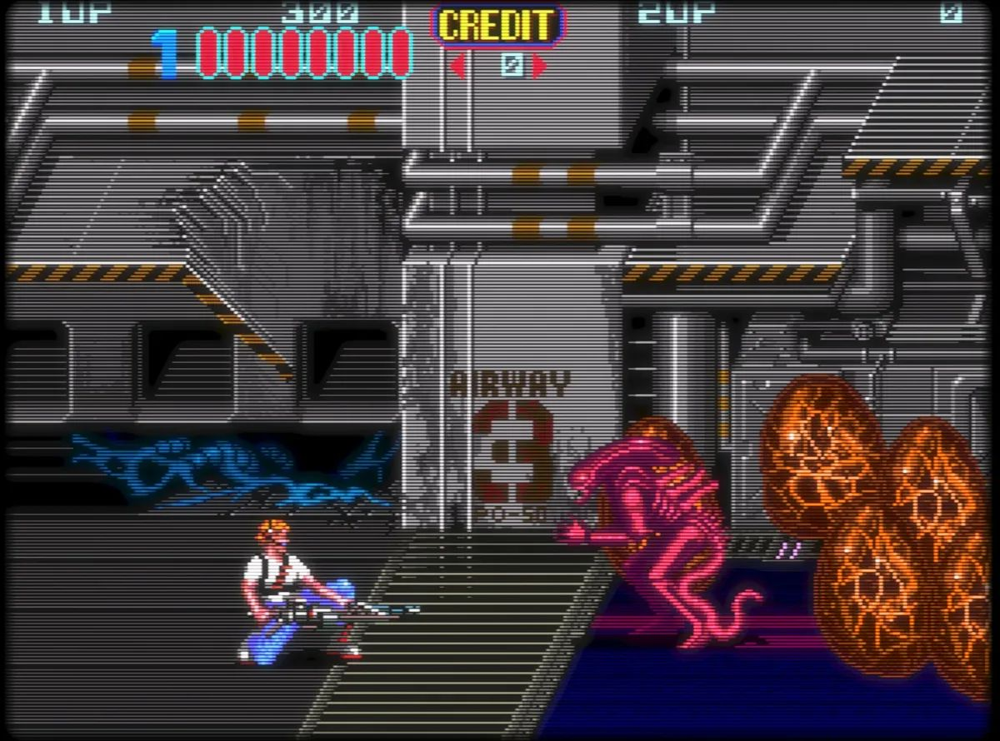
Xbox Cloud Gaming s’installe comme application web. Ce n’est « que » l’habillage du service, mais il démarre vite et tourne très bien en 1080p — une bonne solution si vous avez déjà le Game Pass et voulez jouer à des titres qui ne tournent pas nativement sous Linux.
NVIDIA GeForce NOW répond au même besoin, par la même voie.
Le client Moonlight est préinstallé : vous pouvez donc diffuser des jeux depuis un PC Windows faisant tourner Sunshine, immédiatement. Lancez-le depuis le lanceur.
Si votre machine Omarchy et le PC de jeu sont tous deux en filaire, l’expérience est indiscernable d’une partie locale : montez la définition au natif, le rafraîchissement à 120 Hz et le débit au maximum. C’est la meilleure façon de jouer à des jeux de tir compétitifs sous Linux.
Une machine Omarchy peut aussi devenir l’hôte : omarchy install service sunshine installe Sunshine et ouvre les ports de streaming pour votre réseau local et pour Tailscale.
| Battle.net | Diablo, Starcraft, World of Warcraft — en installation autonome sous GE-Proton, sans passer par Steam, Lutris ou Heroic. |
| Lutris | La voie pour les jeux Windows venant de boutiques comme EA ou Ubisoft Connect, qui n’ont pas leur propre installateur. |
| Heroic | Les titres Epic Games sans anti-triche, plus GOG et Amazon Prime Gaming. |
| Minecraft | Installation directe depuis le menu. |
Le manuel officiel prévient franchement : l’installation de Lutris et de Heroic est parfois brouillonne et donne l’impression que rien ne se passe. Soyez patient, cela travaille en arrière-plan.
La prise en charge des manettes Xbox Bluetooth s’installe par Install > Gaming > Xbox Controllers. Appairez ensuite la manette par Bluetooth (Super + Ctrl + B) et elle fonctionnera dans tous vos jeux. Inutile si vous branchez votre manette en USB-C.
Pour le logiciel dont on ne peut vraiment pas se passer — pas pour jouer.
Omarchy propose une façon simple de faire tourner Windows dans une machine virtuelle Docker. On l’installe par Install > Windows dans le menu.
Votre machine doit prendre en charge la virtualisation KVM — c’est le cas de la plupart, mais elle est parfois désactivée dans le BIOS, et l’installateur vous le dira. Prévoyez aussi l’espace disque : ce que vous allouez à Windows, plus une dizaine de gigaoctets pour l’image elle-même.
L’installateur demande la quantité de mémoire, le nombre de cœurs et l’espace disque à céder — 64 Go est un plancher raisonnable — puis un nom d’utilisateur et un mot de passe Windows. Laissés vides, ils valent docker et admin. Le téléchargement prend du temps : 10 à 15 minutes est normal, et l’on peut suivre la progression dans le navigateur à l’adresse http://127.0.0.1:8006.
Une fois installée, lancez Windows depuis le lanceur. Cela démarre la machine virtuelle si nécessaire et vous y connecte en RDP, en plein écran. Comptez 15 à 30 secondes à froid.
La session RDP transporte le son, votre microphone et un presse-papiers partagé : copier du texte entre Linux et Windows fonctionne donc directement. La définition suit la taille de votre fenêtre, et Omarchy transmet la mise à l’échelle de votre écran, pour éviter le rendu flou sur un affichage à haute densité.
Quand vous fermez la fenêtre RDP, la machine virtuelle s’éteint automatiquement. Pour la laisser tourner :
omarchy windows vm launch --keep-alive omarchy windows vm status # est-elle en cours d'exécution ? omarchy windows vm stop # l'éteindre omarchy windows vm launch # la démarrer et s'y connecter
Le dossier ~/Windows de votre dossier personnel est automatiquement partagé avec la machine virtuelle : déposez-y ce que Windows doit voir. La machine virtuelle n’a accès à aucune autre partie de votre système de fichiers — vous êtes donc protégé de ce qui pourrait arriver du côté Windows. Son propre disque virtuel se trouve dans ~/.windows, et ses ports ne sont liés qu’à localhost : rien sur votre réseau ne peut atteindre cette machine Windows.
Il n’y a pas de passage direct de la carte graphique : cette configuration ne convient donc ni au jeu ni au montage vidéo. C’est en revanche un excellent moyen de faire tourner Microsoft Office ou tout autre logiciel dont vous ne pouvez absolument pas vous passer.
La version installée est Windows 11 Pro, non activée : il vous faudra votre propre clé de licence pour les fonctions concernées.
Les ressources allouées se modifient plus tard dans ~/.config/windows/docker-compose.yml, qui est aussi l’endroit où monter un périphérique USB.
Pour tout supprimer, utilisez Remove > Windows. Cette opération efface le disque de la machine virtuelle et toutes ses données : assurez-vous que ce à quoi vous tenez est sorti de ~/Windows avant.
Mises à jour, logiciels, fichiers de configuration, réseau, énergie, sauvegardes système et sécurité : l’entretien courant, et ce qu’il ne faut pas faire.
omarchyomarchyTout ce que fait le menu, la ligne de commande sait le faire — et se laisse scripter.
Au quotidien, on pilote Omarchy par les raccourcis et par le menu. Mais tout est également accessible par la commande omarchy, ce qui devient particulièrement utile quand un agent IA vous aide à configurer ou personnaliser le système.
Tapez omarchy seul dans le terminal pour voir tout ce qui est disponible :
~ ❯ omarchy Omarchy command center Usage: omarchy <command> [args...] omarchy commands [--all] [--json] [--check] omarchy <group> --help omarchy <group> <command> --help Common commands: omarchy update Update Omarchy and system packages omarchy theme list List available themes omarchy theme set <name> Apply a theme omarchy font list List available fonts omarchy screenshot Take a screenshot omarchy debug Print debugging information Groups: agent AI coding agent usage data audio Audio input and output controls bar Omarchy shell bar layout and settings battery Battery status helpers bluetooth Bluetooth device controls branch Omarchy git branch management branding About and screensaver branding brightness Display and keyboard brightness capture Screenshots and screen recording channel Omarchy release channel management clipboard Clipboard helpers cmd Command and shortcut helpers config System configuration helpers debug Diagnostics and support logs ...
Chaque groupe se détaille de la même manière — omarchy capture liste toutes les commandes de capture avec leurs options. Et toute commande accepte --help, qu’on interroge un groupe entier (omarchy capture --help) ou une commande précise (omarchy capture screenshot --help).
C’est la meilleure façon d’explorer Omarchy. Plutôt que de chercher dans le manuel comment régler quelque chose, tapez omarchy, repérez le groupe qui correspond, et descendez. Les descriptions sont courtes et précises. Un index des groupes figure en annexe B.
Le menu Omarchy est lui aussi scriptable, ce qui est commode pour vos propres raccourcis :
omarchy menu # à la racine omarchy menu summon style.theme # directement au sélecteur de thème omarchy menu toggle system # ouvre le menu système, ou le referme omarchy menu close
Certaines commandes plus anciennes existent encore sous forme d’exécutables à tirets : omarchy-restart-xcompose, omarchy-toggle-enabled, omarchy-snapshot, omarchy-channel-set, omarchy-debug, omarchy-reinstall, omarchy-mise-install, omarchy-capture-webcam-resize, omarchy-sudo-passwordless. Elles sont mentionnées telles quelles dans le manuel officiel et rassemblées en annexe B.
Une seule commande met tout à jour — et il y a de très bonnes raisons de ne pas la contourner.
Omarchy et vos paquets se mettent à jour par Update > Omarchy dans le menu.
Omarchy lui-même est installé sous forme de paquets pacman ordinaires, provenant du dépôt de paquets Omarchy. Une mise à jour installe donc la dernière version d’Omarchy, exécute les migrations en attente pour aligner votre système sur cette version, et met à jour tous les paquets du système depuis le miroir Arch d’Omarchy et, le cas échéant, depuis l’AUR.
Quand une nouvelle version paraît, une icône en forme de flèche circulaire apparaît à droite de votre horloge. Cliquez-la et la mise à jour démarre.
Si vous connaissez déjà Arch, vous serez tenté de lancer vous-même pacman -Syu ou yay -Syu. Ne le faites pas. Vous perdriez l’instantané de sécurité, les migrations et les mises à jour de configuration qu’Omarchy exécute en même temps que les paquets. Omarchy interrompt d’ailleurs volontairement une mise à niveau système directe et vous renvoie vers omarchy update. (Si vous savez vraiment ce que vous faites, le garde-fou vous indique comment le contourner pour une transaction unique.)
Omarchy se met à jour selon quatre canaux : stable, RC, edge et dev.
| Canal | Pour qui, et ce qu’il suit |
|---|---|
| stable | Le canal des installations neuves, et celui qu’il faut garder. Il suit les versions officielles ainsi que le miroir Arch stable d’Omarchy, volontairement en retard d’un mois sur les paquets les plus récents — le temps de détecter les incompatibilités qui exigeraient un changement de configuration, avant qu’elles ne posent problème à tout le monde. |
| RC | La validation finale avant une nouvelle version majeure. Pour ceux qui veulent aider au polissage ; la discussion se passe sur le canal #omarchy-release-candidates du Discord. |
| edge | Les versions de développement d’Omarchy et les paquets Arch dès leur disponibilité. À réserver aux utilisateurs Linux expérimentés, qui savent rattraper un système en difficulté. |
| dev | Relie Omarchy directement à une copie git du code source dans ~/omarchy, combinée aux paquets edge. À n’utiliser que si vous travaillez sur Omarchy lui-même et acceptez que les choses cassent. |
On change de canal par Update > Channel, ou par omarchy-channel-set dans le terminal.
Vos paquets ne sont pas la seule chose qui vieillit. Beaucoup de portables et de périphériques diffusent leurs mises à jour de BIOS, de SSD et de station d’accueil par le Linux Vendor Firmware Service. Update > Firmware récupère et installe ce que votre matériel a en attente ; l’outil fwupd est installé au premier usage. Beaucoup de firmwares ne peuvent être écrits que pendant un redémarrage : ne soyez pas surpris qu’on vous en demande un.
Si vous rencontrez un problème après une mise à jour, vous pouvez ramener le système à l’instantané pris avant celle-ci : redémarrez et choisissez l’instantané voulu dans le menu du chargeur de démarrage (chapitre 45).
Et si ce sont vos fichiers de configuration qui ont été abîmés, omarchy reinstall réinstalle tous les paquets Omarchy par défaut, vous replace sur le canal stable, rétrograde les paquets trop récents, et réinitialise tous les fichiers de configuration.
omarchy reinstall écrase toutes vos modifications personnelles apportées aux réglages par défaut d’Omarchy. C’est un dernier recours, pas une manœuvre d’entretien. Pour restaurer un seul fichier, préférez Update > Config.
Le catalogue d’Arch est immense, et Omarchy le rend accessible sans quitter le menu.
Arch dispose d’une richesse remarquable de paquets pour à peu près n’importe quel type de logiciel, entre son dépôt officiel et l’AUR (Arch User Repository).
Allez dans Install > Package et tapez le nom du logiciel : la liste de tous les paquets se filtre au fil de la frappe. En ligne de commande :
omarchy pkg add [paquet]
Pour l’AUR, la démarche est la même avec Install > AUR.
L’AUR n’est pas contrôlé par l’équipe d’Arch. N’importe qui peut y publier — le manuel officiel compare ce risque à celui de RubyGems ou de npm. Cela ne veut pas dire qu’il faut s’en priver, mais qu’il faut savoir d’où vient ce qu’on installe. L’installation de base d’Omarchy n’utilise pas l’AUR ; seuls quelques logiciels optionnels, comme certains navigateurs tiers, en proviennent.
Remove > Package retire le paquet, ses fichiers de configuration et ses dépendances. En ligne de commande :
omarchy pkg drop [paquet]
Si vous ne voulez ni Obsidian, ni LibreOffice, ni le reste des logiciels livrés, le ménage est simple.
Après un Remove > Preinstalls, les raccourcis qui lançaient ces programmes disparaissent avec eux. Vous vous retrouvez avec une page blanche de combinaisons libres, à remplir à votre goût dans ~/.config/hypr/bindings.lua (chapitre 10).
Où vivent vos réglages, ce qui vous appartient, ce qui appartient à Omarchy, et comment ne pas perdre son travail.
La règle fondamentale tient en une phrase : les fichiers de ~/.config sont les vôtres ; ceux de /usr/share/omarchy appartiennent à Omarchy. Si vous voulez changer quelque chose qui se trouve dans /usr/share/omarchy, il faut redéfinir la valeur dans ~/.config, pas modifier l’original.
Les configurations principales s’éditent directement depuis le menu Omarchy : Setup > Monitors, Setup > Keybindings, Setup > Input, Setup > Config > [fichier]. Fait de cette manière, tout processus qui doit redémarrer après l’édition le fera automatiquement quand vous quitterez l’éditeur — Neovim par défaut, où l’on quitte en enregistrant avec :wq.
| Fichier | Ce qu’il contrôle |
|---|---|
~/.config/hypr/hyprland.lua | La configuration principale de Hyprland. Elle charge les réglages par défaut d’Omarchy puis vos fichiers de redéfinition ci-dessous. |
~/.config/hypr/bindings.lua | Vos raccourcis clavier, et vos redéfinitions de ceux d’origine. |
~/.config/hypr/monitors.lua | Vos écrans : définition, position, mise à l’échelle. |
~/.config/hypr/input.lua | Clavier, souris et pavé tactile. |
~/.config/hypr/looknfeel.lua | Espaces, bordures, animations et le reste de l’apparence. |
~/.config/hypr/autostart.lua | Les processus supplémentaires lancés avec la session. |
~/.config/omarchy/shell.json | Le shell Omarchy : position, disposition et éléments de la barre, plus les délais d’économiseur, de verrouillage et d’inactivité. |
~/.config/foot/foot.ini | Votre terminal (Foot par défaut). |
~/.XCompose | Vos émoji rapides et vos complétions de nom et d’adresse. Lancez omarchy-restart-xcompose après modification. |
~/.bashrc | Vos alias, fonctions et variables d’environnement. Jamais écrasé par une mise à jour. |
~/.config/starship.toml | L’invite du terminal. |
Si vous finissez par beaucoup personnaliser, sauvegardez ces fichiers. Le manuel officiel recommande l’outil Stow pour cela : il permet de garder tous ses fichiers de configuration dans un dépôt git et de les relier au bon endroit sur chaque machine.
Pour qu’un programme démarre à chaque ouverture de session — un démon de synchronisation, une messagerie, votre propre script — ajoutez-le à ~/.config/hypr/autostart.lua :
o.launch_on_start("mon-service")
La commande devient alors partie intégrante de la session, et se termine proprement à la déconnexion.
Omarchy déclenche des crochets (hooks) à quelques moments clés, auxquels vous pouvez accrocher vos scripts. Ils vivent dans ~/.config/omarchy/hooks/<événement>.d/, un dossier par événement, et tout fichier exécutable qui s’y trouve est lancé quand l’événement survient.
| Événement | Quand il se déclenche |
|---|---|
post-boot | Juste après le démarrage du bureau |
post-update | Pendant omarchy update, après les paquets et les migrations |
pre-refresh-pacman | Avant qu’omarchy refresh pacman ne resynchronise la configuration des paquets |
theme-set | Après un changement de thème (le nom du thème est dans $1) |
font-set | Après un changement de police (le nom est dans $1) |
battery-low | Quand la batterie devient faible (le pourcentage est dans $1) |
Chacun de ces dossiers contient déjà un fichier .sample montrant la forme attendue : retirez le .sample du nom pour l’activer. Pour installer un script écrit ailleurs :
omarchy hook install post-boot ~/mon-crochet
C’est votre ordinateur, vous en faites ce que vous voulez. Mais le manuel déconseille de modifier directement les fichiers de /usr/share/omarchy : ils appartiennent au paquet pacman d’Omarchy, et vos changements seront simplement écrasés à la prochaine mise à jour. Redéfinissez plutôt les valeurs qui vous déplaisent dans ~/.config/.
On peut ainsi tout changer, y compris les raccourcis par défaut. Pour remplacer Obsidian par Joplin, par exemple, il suffit d’éditer ~/.config/hypr/bindings.lua :
hl.unbind("SUPER + SHIFT + O")
o.bind("SUPER + SHIFT + O", "Joplin", "joplin-desktop")
Et si vous tenez vraiment à modifier les fichiers internes, passez sur le canal dev par Update > Channel > Dev : Omarchy est alors relié à une copie git du code source dans ~/omarchy, que vous pouvez modifier à loisir.
Si vous avez fait des dégâts, Update > Config restaure les configurations dans leur état d’origine ; omarchy reinstall configs réinitialise l’ensemble.
Wi-Fi, DNS, partage de connexion, pare-feu et VPN maillé — presque tout depuis un seul panneau.
Le réseau est géré par NetworkManager, et vous le pilotez depuis l’icône réseau de la barre du haut ou avec Super + Ctrl + W.
Ce panneau recherche les réseaux Wi-Fi, affiche la puissance du signal et se connecte. L’Ethernet ne demande rien du tout : branchez, cela fonctionne. Si vous préférez rester dans le terminal, nmtui offre les mêmes commandes, et il existe un groupe de commandes omarchy network.
Plutôt que de dicter un long mot de passe à voix haute, lancez Setup > Network > QR Code pendant que vous êtes connecté en Wi-Fi. Un QR code s’affiche, que l’appareil photo de n’importe quel téléphone peut scanner pour rejoindre le réseau. C’est le genre de fonction qu’on utilise bien plus souvent qu’on ne l’aurait cru, une fois qu’on sait qu’elle existe.
Si c’est le mot de passe lui-même qu’il vous faut : omarchy network password <interface>.
Omarchy utilise le DNS fourni par votre réseau via DHCP. Pour le remplacer sur toute la machine, allez dans Setup > Network > DNS, où Cloudflare et Google sont à un clic. Custom permet de saisir vos propres serveurs.
omarchy dns # affiche le fournisseur courant omarchy dns Cloudflare # en définit un
Si votre routeur diffuse le 2,4 GHz, le 5 GHz et le 6 GHz sous le même nom de réseau, votre portable s’accroche parfois à la bande la plus lente.
omarchy network band # sur quelle bande vous êtes omarchy network band 5 # épingle le 5 GHz omarchy network band auto # laisse le système choisir à nouveau
C’est la bande qui est épinglée, pas un point d’accès précis : vous continuez donc à passer normalement d’une borne à l’autre.
Trigger > Speed Test > Network Speed Test mesure vos débits montant et descendant réels avec deux cadrans. Depuis le terminal, omarchy network speedtest down ou up. Un test de débit disque est disponible juste à côté dans ce menu, ou avec omarchy disk speedtest.
Le pare-feu est actif par défaut et bloque tout le trafic entrant, à une exception près : le port 53317, pour que LocalSend fonctionne dès l’installation.
SSH est désactivé tant que vous ne l’activez pas par Setup > Security > SSHD, ce qui démarre le démon, ouvre le port 22 avec une limitation de débit contre les attaques par force brute, et autorise une clé. Docker est également verrouillé, pour éviter que des conteneurs ne s’exposent accidentellement au monde entier (chapitre 46).
Tailscale est un VPN maillé qui rend l’accès à toutes vos machines simple et sûr par internet. Installez-le par Install > Service > Tailscale.
Vous obtenez alors un panneau Tailscale dans la barre, qui connecte et déconnecte le réseau, change de compte et choisit un nœud de sortie — vos propres machines comme les régions Mullvad y figurent. Il permet aussi de parcourir vos machines, et c’est là que se trouve Taildrop : sélectionnez une machine et appuyez sur s pour lui envoyer des fichiers, ou sur c, n et d pour copier son adresse IP, son nom ou son nom DNS complet.
omarchy tailscale send <machine> [fichier...]
Les fichiers qui vous sont envoyés atterrissent automatiquement dans ~/Downloads. L’installation ajoute également une application web pour la console d’administration.
Avant de redémarrer la machine, essayez de relancer seulement le composant fautif. Update > Hardware contient Wi-Fi, Bluetooth, Audio et Trackpad, et recharger l’un d’eux résout la majorité des situations du type « ça marchait il y a cinq minutes » : un casque Bluetooth qui refuse de se reconnecter, un pavé tactile mort après une mise en veille, le son disparu au débranchement d’un écran.
Ce qui est activé par défaut, ce qui demande une mise en place, et comment gérer les profils d’énergie.
Omarchy active la mise en veille et l’hibernation par défaut. Si l’une ou l’autre pose problème sur votre machine — cela dépend beaucoup du matériel — vous pouvez les désactiver.
Sur un portable, Omarchy mémorise votre profil d’énergie séparément pour le fonctionnement sur secteur et sur batterie, et bascule de l’un à l’autre quand vous branchez et débranchez. Par défaut : performance sur secteur, équilibré sur batterie.
omarchy powerprofiles list # ce que propose la machine omarchy powerprofiles set autodetect power-saver # règle l'état courant omarchy powerprofiles set battery power-saver # règle l'état « sur batterie » sans débrancher
Ce que vous choisissez est ce que vous retrouverez la prochaine fois que vous serez dans cet état.
omarchy toggle suspend
Cette commande fait simplement apparaître ou disparaître l’option sous System (Super + Échap). Vous pouvez alors vérifier si la veille fonctionne de façon fiable sur votre machine ; si ce n’est pas le cas, masquez-la à nouveau avec la même commande.
omarchy hibernation setup omarchy hibernation remove
L’hibernation crée un sous-volume /swap sur votre disque de démarrage, de la taille de votre mémoire vive. Sur une machine dotée de 32 Go, il vous faudra donc toujours plus de 32 Go de libre pour ce volume. L’hibernation exige par ailleurs le chargeur de démarrage Limine, celui d’origine.
Une fois en place, l’option d’hibernation apparaît sous System (Super + Échap). Là encore, essayez-la : si elle ne se comporte pas correctement sur votre matériel, retirez-la.
Ne confondez pas ce chapitre avec le chapitre 14. Celui-ci traite de l’énergie — ce qui éteint la machine. Le chapitre 14 traite de l’inactivité — ce qui verrouille l’écran et lance l’économiseur. Ce sont deux mécanismes distincts, avec deux réglages distincts.
Deux façons de ne plus taper son mot de passe vingt fois par jour.
Beaucoup de portables ont un capteur d’empreinte. Pour l’utiliser, lancez Setup > Security > Fingerprint dans le menu Omarchy. La procédure installe le paquet nécessaire, enregistre votre empreinte, la vérifie, et vous voilà prêt.
Une fois configurée, l’empreinte sert à trois choses : déverrouiller depuis l’écran de verrouillage (Super + Ctrl + L), passer en mode sudo, et autoriser les demandes du système.
Deux détails bien pensés. Quand le capot du portable est fermé, l’invite d’empreinte est automatiquement sautée : vous allez droit au mot de passe, sans attendre devant un capteur inaccessible. Et si vous travaillez sur un clavier externe sans capteur, Ctrl + C au moment de l’invite d’empreinte pendant un sudo vous ramène au mot de passe.
Pour la retirer : Remove > Security > Fingerprint.
Si vous utilisez une clé de sécurité Fido2, vous pouvez la configurer pour l’authentification sudo par Setup > Security > Fido2. Elle couvre sudo et les demandes d’autorisation du système — mais pas le déverrouillage de l’ordinateur.
Pour la retirer : Remove > Security > Fido2.
Le filet de sécurité d’Omarchy : revenir à l’état d’avant la mise à jour, depuis le menu de démarrage.
Un instantané est pris automatiquement à chaque mise à jour d’Omarchy. Pour en créer un vous-même :
omarchy-snapshot create
On sélectionne l’instantané dans le chargeur de démarrage Limine. Si votre machine démarre directement sur l’écran de déchiffrement d’Omarchy, il faudra d’abord sélectionner Limine comme option de démarrage dans le BIOS.
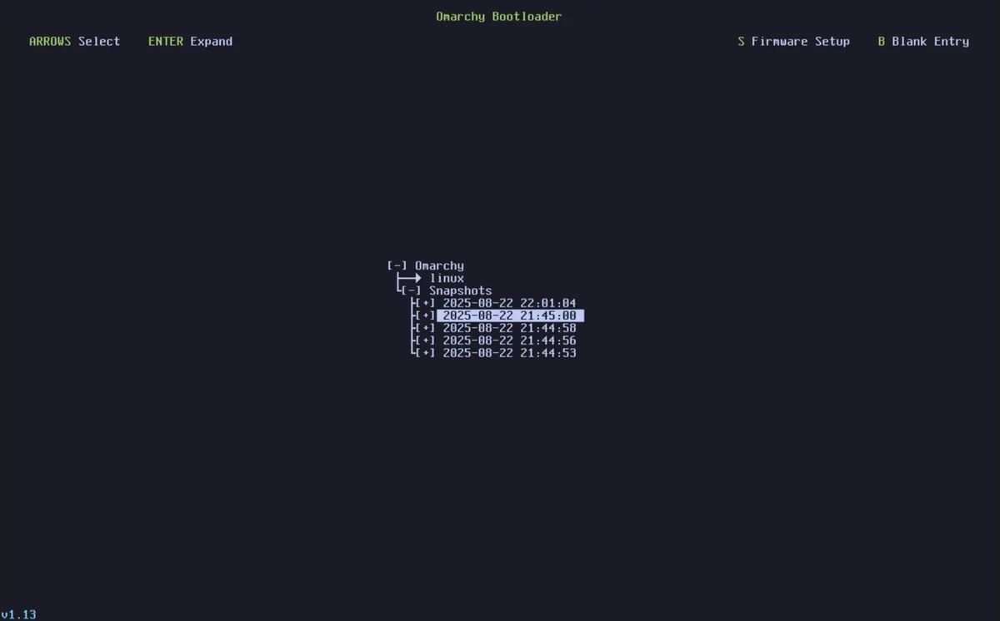
Choisissez l’instantané voulu d’après sa date et sa version. Une fois démarré dessus, une notification vous prévient que vous êtes dans un instantané amorçable ; cliquez-la et la restauration commence. On peut aussi lancer omarchy-snapshot restore.
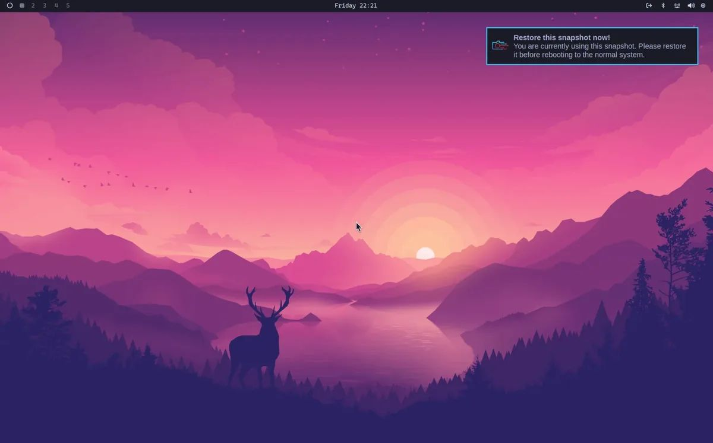
La restauration porte sur le système de fichiers racine, pas sur /home. Autrement dit : elle sert à revenir sur une mise à jour système qui a mal tourné, pas à récupérer des fichiers personnels perdus. Pour vos documents, il vous faut une vraie sauvegarde, ce qu’Omarchy ne fournit pas.
Corollaire : votre dossier ~/.config est conservé tel quel. Si vous revenez à une version antérieure d’une bibliothèque ou d’une application qui stocke sa configuration dans un nouveau format, il faudra régler ce point à la main.
Cette fonction n’est disponible que sur les installations utilisant le chargeur Limine, celui d’origine depuis Omarchy 2.0. Elle n’existe pas si vous êtes sur GRUB ou systemd-boot.
Si vous ne touchez jamais au menu de démarrage et voulez que la machine aille droit à l’écran de déchiffrement, lancez Setup > Direct Boot. Cela ajoute une entrée EFI pointant directement sur Omarchy, que le firmware démarre sans s’arrêter à Limine.
La contrepartie est celle évoquée plus haut : avec le démarrage direct activé, atteindre un instantané suppose de choisir d’abord Limine dans le menu de démarrage du BIOS. Relancez Setup > Direct Boot pour retirer l’entrée et revenir au démarrage par Limine.
Certains firmwares acceptent mal les entrées EFI personnalisées : la mise en place refuse donc de s’exécuter sur les firmwares American Megatrends et Apple.
Ce qu’Omarchy fait pour vous par défaut, et les quelques décisions qui restent les vôtres.
Le manuel officiel est explicite sur l’intention : Omarchy est conçu pour faire du vrai travail dans le vrai monde, là où perdre un portable ne doit pas se transformer en urgence de sécurité. Cinq mesures y contribuent.
Sur une installation chiffrée, vous avez deux mots de passe : celui qui déverrouille le disque au démarrage, et celui avec lequel vous ouvrez la session et faites sudo. Tous deux se changent sous Update > Password : Drive Encryption pour le premier, User pour le second. Le changement du mot de passe de disque demande d’abord l’actuel : ayez-le sous la main.
Pas besoin de réinstaller. Lancez Setup > Reset Computer, tapez reset pour confirmer, et redémarrez. L’opération efface tous les comptes utilisateurs et tout le contenu de /home, annule les paquets et les modifications système ajoutés depuis l’installation, et efface l’identité de la machine — connexions réseau, clés d’hôte, tout. Ce qui redémarre est l’assistant de premier démarrage, prêt pour son nouveau propriétaire.
La remise à zéro fonctionne en restaurant l’instantané de référence pris par l’installateur : elle n’est donc disponible que sur les machines installées depuis l’ISO d’Omarchy. Et sur un disque non chiffré, une remise à zéro est une suppression, pas un effacement sécurisé : si les données étaient sensibles, faites plutôt une installation neuve.
Il arrive qu’on veuille que sudo cesse de demander — le plus souvent quand un agent IA enchaîne un long travail système. Setup > Security > Passwordless Sudo désactive la demande pendant quinze minutes, puis la rétablit automatiquement. Relancer la commande avant la fin du délai y met fin plus tôt, et l’on peut passer sa propre durée : omarchy-sudo-passwordless 30.
Soyez lucide sur cette fonction : tant qu’elle est active, n’importe quoi tournant sous votre compte peut faire n’importe quoi en tant que root, sans qu’on vous demande rien. C’est tout l’intérêt, et c’est aussi tout le risque.
La clé publique de toutes les signatures d’ISO et des paquets du dépôt Omarchy est :
40DFB630FF42BCFFB047046CF0134EE680CAC571
Elle est vérifiable sur keys.openpgp.org, et le paquet omarchy/omarchy-keyring la contient également. La signature d’une ISO s’obtient en ajoutant .sig à son URL de téléchargement.
Une méthode de dépannage, les questions que tout le monde pose, les configurations particulières — et à qui s’adresser quand plus rien ne marche.
Du geste le moins invasif au plus radical — dans cet ordre, toujours.
omarchy-reinstall, en dernier recours seulement — cela écrase vos personnalisations.Avant de demander de l’aide, lancez :
omarchy-debug
C’est ce que vous partagerez sur le canal #omarchy-help du Discord communautaire. Un rapport complet fait gagner plusieurs allers-retours à ceux qui vous répondent.
Commencez par revenir à l’instantané précédant la mise à jour (chapitre 45). Si cela ne suffit pas, utilisez omarchy-debug pour exposer le problème sur #omarchy-help. En dernier recours, omarchy-reinstall réinstalle les configurations et les paquets par défaut.
Omarchy suppose un écran haute densité, ce qui implique GDK_SCALE à 2 dans ~/.config/hypr/monitors.lua. Sur un écran 1x, remplacez local omarchy_gdk_scale = 2 par 1, puis relancez les applications devenues trop grandes (chapitre 17).
Cas particulier de Spotify : Ctrl + - réduit son interface et Ctrl + + l’agrandit.
C’est voulu : cette touche est devenue la touche de composition, pour les émoji rapides et les complétions (chapitre 10). Pour la récupérer, déplacez la composition ailleurs dans ~/.config/hypr/input.lua :
hl.config({
input = {
kb_options = "compose:ralt",
},
})
Avant de redémarrer, relancez le sous-système concerné depuis Update > Hardware. Cela règle la grande majorité des cas : un casque Bluetooth qui ne se reconnecte pas, un pavé tactile mort après une veille, le son disparu au débranchement d’un écran.
Elles ne sont probablement pas définies comme sortie principale. Cliquez l’icône de haut-parleur à droite de la barre : le panneau audio permet de choisir le périphérique de sortie — et de régler le volume application par application.
Sur certains portables, Omarchy applique automatiquement une correction de la réponse en fréquence des haut-parleurs intégrés.
omarchy audio tuning status # une correction est-elle active ? omarchy audio tuning off # l'enlever pour entendre les enceintes brutes
Vous l’avez probablement mal saisi trop de fois et vous êtes verrouillé. Si cela se produit sur l’écran de verrouillage, appuyez sur Ctrl + Alt + F2 pour ouvrir une console texte (un TTY), connectez-vous en root, puis :
faillock --reset --user [votre-nom-utilisateur]
Cela réinitialise le verrouillage.
Retenez Ctrl + Alt + F2. C’est la porte de secours du système : elle ouvre une console texte indépendante de l’interface graphique, et elle répond même quand le bureau ne répond plus.
Deux causes possibles. Pour que l’invite complète s’affiche, l’option Settings > Advanced > Use Hardware Acceleration doit être activée — ce qui demande un redémarrage pour prendre effet. Ou bien vous n’avez tout simplement pas encore lancé 1Password depuis le démarrage de la machine : l’invite n’apparaîtra pas tant que l’application n’a pas été ouverte au moins une fois.
La FAQ officielle, traduite et rangée.
Éditez ~/.config/hypr/input.lua et ajoutez ceci, qui permet de changer avec Alt gauche + Alt droit :
hl.config({
input = {
kb_layout = "us,fr",
kb_options = "compose:caps,shift:both_capslock_cancel,grp:alts_toggle",
},
})
La barre affichera automatiquement la disposition active dès lors que plusieurs sont configurées — et un clic dessus permet aussi de changer.
Faites un clic droit sur l’horloge dans la barre pour parcourir les formats courants, y compris les formats sur 12 heures. Ou définissez-le directement :
omarchy bar set omarchy.clock format "dddd h:mm AP"
Update > Timezone dans le menu Omarchy, puis choisissez dans la liste. Si le fuseau est correct mais que l’horloge a dérivé, Update > Time relance la synchronisation.
Trigger > Speed Test > Disk Speed Test mesure les débits réels de lecture et d’écriture, ou omarchy disk speedtest depuis le terminal.
La version libre pure de Chromium ne contient pas les identifiants OAuth que Google exige. Lancez Install > Service > Chromium Account, redémarrez le navigateur, et la connexion aboutira.
L’impression est configurée et fonctionnelle d’origine : une imprimante présente sur votre réseau est généralement déjà détectée. Lancez Print Settings depuis le lanceur pour voir ce qui est disponible, en ajouter une à la main, ou définir l’imprimante par défaut. L’impression vers un fichier PDF fonctionne sans aucune imprimante.
Pour que les captures soient enregistrées dans ~/Pictures/Screenshots plutôt que directement dans ~/Pictures, créez un fichier sous ~/.config/uwsm/env.d/ — par exemple ~/.config/uwsm/env.d/capture — contenant :
export OMARCHY_SCREENSHOT_DIR="$HOME/Pictures/Screenshots"
La même chose fonctionne pour les enregistrements vidéo avec OMARCHY_SCREENRECORD_DIR.
Pensez à créer le dossier et à redémarrer Omarchy pour que cela prenne effet. Nuance importante : Omarchy crée pour vous le dossier de captures d’écran s’il n’existe pas, mais celui des enregistrements vidéo doit exister au préalable, sinon l’enregistrement refuse de démarrer.
C’est aussi l’endroit où placer OMARCHY_YTDLP_DIR pour changer la destination des vidéos téléchargées, et OMARCHY_SCREENSHOT_EDITOR pour changer l’éditeur d’annotation.
On s’attendrait à ce que tout fonctionne en USB-C, mais ce n’est malheureusement pas le cas. La solution fiable rapportée par le manuel est un câble DisplayPort + USB-A vers USB-C. Rappel : la luminosité des écrans Apple (Studio comme XDR) se règle avec les touches habituelles du clavier.
Remove > Package, Remove > Web App, ou Remove > Preinstalls pour tout balayer d’un coup. Voir le chapitre 40.
Le double démarrage : ce chapitre concerne l’installation, mais il vaut d’être lu après coup pour ajouter Windows au menu de démarrage.
Omarchy peut s’installer sur une seule partition, à côté de Windows ou d’un autre système. Cette méthode conserve le chiffrement LUKS de la partition par défaut : elle n’est donc pas moins sûre qu’une installation sur disque entier, et demande simplement de l’espace libre sur le disque.
gestion des disques dans le menu Démarrer et choisissez Créer et formater des partitions de disque dur.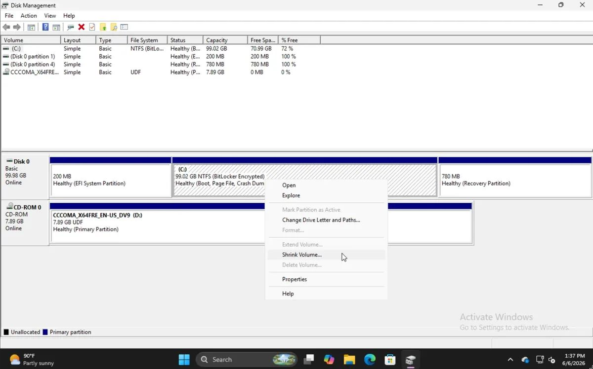
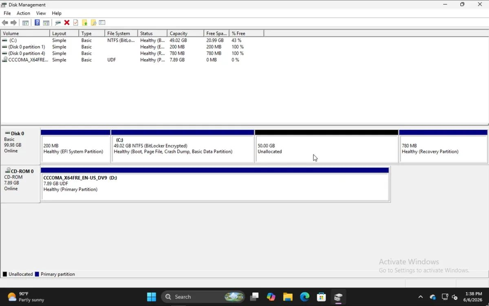
Le processus est pour l’essentiel identique à une installation normale. Après avoir sélectionné le disque, on vous propose l’option Free space install : choisissez-la pour ne pas effacer le disque entier. Confirmez et laissez l’installation se dérouler. C’est également à cette étape que l’on pourrait choisir une installation sans chiffrement — ce qui n’est pas recommandé.
À la fin de l’installation, le chargeur Limine est devenu celui par défaut. Vous pouvez y ajouter vos autres systèmes :
limine-scan
Suivez les invites pour ajouter les entrées souhaitées à la configuration de Limine. Au démarrage suivant, vous verrez vos options habituelles : Omarchy, mais aussi le gestionnaire de démarrage Windows ou les autres systèmes détectés.
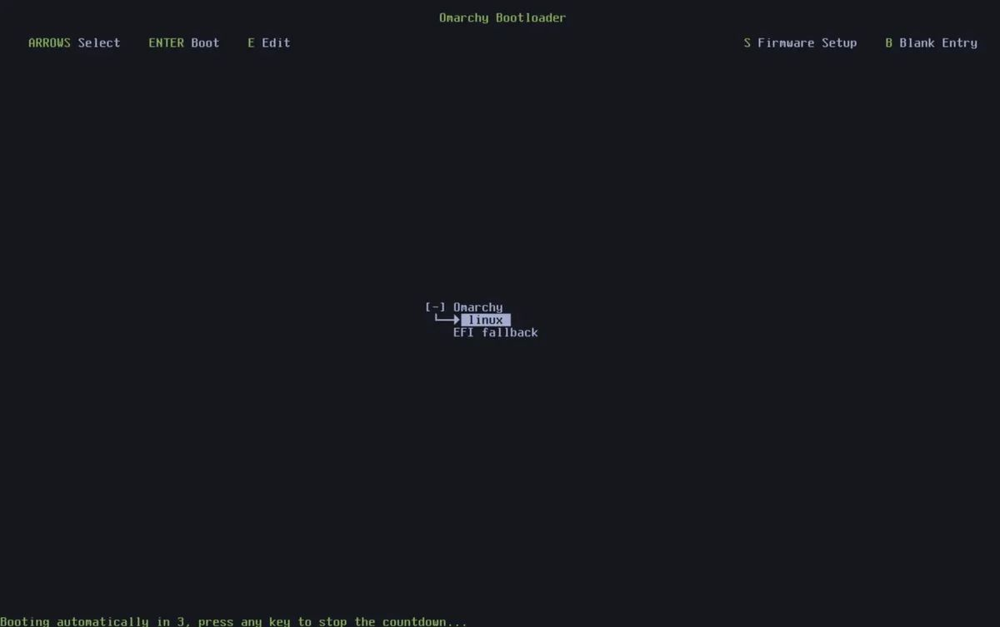
Cette méthode d’installation est incompatible avec BitLocker, qui chiffre le disque entier et non une seule partition. Si vous voyez une erreur indiquant que BitLocker est activé, démarrez sous Windows, allez dans Paramètres → Confidentialité et sécurité → Chiffrement de l’appareil et désactivez-le. Le déchiffrement du disque peut prendre un certain temps.
Pour préparer plusieurs machines, ou faire d’Omarchy une image de base pour des machines virtuelles.
L’ISO d’Omarchy sait s’installer sans personne au clavier. Si l’installateur trouve un second disque portant l’étiquette cidata et contenant sa configuration, il la recopie, saute entièrement l’assistant, et redémarre tout seul sur le système terminé. Aucune ISO spéciale à construire, aucune entrée de menu supplémentaire : sans un tel disque, rien ne change et vous avez l’assistant habituel.
cidata est l’étiquette NoCloud de cloud-init : tous les outils de virtualisation courants savent donc déjà attacher un tel disque.
Ce sont exactement ceux que l’assistant de l’installateur écrit lui-même. Le plus simple pour obtenir un jeu de départ est donc de faire une installation interactive — dans une machine virtuelle, par exemple — et de copier ce qui a été écrit dans /root.
| Fichier | Obligatoire · Rôle |
|---|---|
user_configuration.json | Oui · Disque, nom de machine, fuseau horaire, clavier |
user_credentials.json | Oui · Nom d’utilisateur et empreinte du mot de passe |
user_full_name.txt | Non · Nom complet pour git |
user_email_address.txt | Non · Adresse e-mail pour git |
user_encrypt_installation.txt | Non · true quand la configuration comporte un bloc disk_encryption |
authorized_keys | Non · Clés publiques SSH, une par ligne |
tailscale_authkey | Non · Clé d’authentification Tailscale, pour rejoindre votre réseau au premier démarrage |
L’empreinte du mot de passe pour user_credentials.json se génère avec :
openssl passwd -6 "votremotdepasse"
On peut aussi déposer un fichier vide nommé defer-provisioning à la place de user_credentials.json. Cela reproduit l’installation « préparée pour un autre propriétaire » : la machine s’installe sans aucune donnée personnelle, et la première personne qui la démarre choisit son clavier et crée son compte. C’est le mode adapté aux chaînes de préparation de matériel, où le support ne doit contenir les identifiants de personne.
Quand authorized_keys est présent, l’installation place les clés dans le ~/.ssh/authorized_keys de l’utilisateur, active sshd et ouvre le pare-feu pour lui. (Une installation Omarchy standard livre openssh avec le service désactivé et le port fermé : une machine installée sans surveillance serait sinon inaccessible.) L’installation se contente d’ajouter vos clés : elle ne relâche aucun autre réglage d’authentification du démon SSH.
Quand tailscale_authkey est présent, la machine rejoint plutôt votre réseau Tailscale au premier démarrage : Tailscale est installé depuis les paquets embarqués dans l’ISO, le pare-feu autorise l’interface du réseau maillé, et une tâche d’arrière-plan effectue le rattachement dès que la machine a réellement du réseau, en réessayant jusqu’à réussir. Utilisez une clé réutilisable et pré-autorisée pour qu’une même image serve plusieurs machines.
N’importe quel système de fichiers portant la bonne étiquette convient. Une petite image ISO est le plus simple :
mkdir cidata cp user_configuration.json user_credentials.json authorized_keys cidata/ genisoimage -output cidata.iso -volid cidata -joliet -rock cidata/
Attachez-la ensuite à la machine virtuelle, à côté de l’ISO d’Omarchy. Voici un exemple complet sous Proxmox :
qm create 101 --name my-omarchy \ --bios ovmf --machine q35 --cpu host --cores 4 --memory 8192 \ --ostype l26 --scsihw virtio-scsi-single \ --efidisk0 local-lvm:0,efitype=4m,pre-enrolled-keys=0 \ --scsi0 local-lvm:40,discard=on,iothread=1 \ --net0 virtio,bridge=vmbr0 --vga virtio --serial0 socket \ --ide2 local:iso/omarchy.iso,media=cdrom \ --ide3 local:iso/cidata.iso,media=cdrom \ --boot order='scsi0;ide2' qm start 101
L’ordre de démarrage place le disque en premier volontairement : le disque vide bascule sur l’ISO au premier démarrage, et le système installé démarre du disque à chaque fois ensuite.
Deux réserves. Une installation chiffrée n’est pas complètement automatique : quelqu’un doit encore taper la phrase de passe LUKS au premier démarrage. Et le bloc disk_encryption de user_configuration.json contient cette phrase en clair : traitez un disque cidata construit à partir d’une installation chiffrée comme le secret qu’il est.
Ce qui est officiellement pris en charge, ce qui relève des guides communautaires, et ce qui ne fonctionne pas.
Omarchy prend officiellement en charge les Mac à processeur Intel. Le manuel rapporte un gain de performance de 36 % sur un MacBook Pro de 2019, simplement en installant Omarchy. Il subsiste quelques limitations connues, détaillées plus bas.
Omarchy ne peut être, pour l’instant, que le seul système installé sur un Mac. L’installation efface le disque et macOS ne sera plus amorçable. Vous pourrez le restaurer plus tard par la récupération par internet d’Apple, mais sauvegardez avant.
Indispensable pour démarrer la clé USB et le système :
L’installateur détecte le matériel Apple et applique automatiquement les correctifs nécessaires : pilotes et micrologiciels Wi-Fi Broadcom, pilote de clavier SPI sur les MacBook qui en ont besoin, et correctif de mise en veille NVMe pour ces mêmes modèles.
Puce T1 — introduite fin 2016 et utilisée exclusivement sur les premiers MacBook Pro à Touch Bar (modèles A1706, A1708, A1707). Sur ces machines, la Touch Bar ne fonctionne pas et le son non plus.
Puce T2 — introduite en 2017 et abandonnée avec le passage aux puces Apple Silicon en 2020. Elle concerne l’iMac Pro 2017, les MacBook Pro 13 et 15 pouces de 2018 à 2020, le MacBook Air Retina 2018 et le Mac mini 2018. Sur ces modèles, l’installateur met automatiquement en place le noyau corrigé linux-t2, la configuration audio T2, les micrologiciels Wi-Fi et Bluetooth Broadcom d’Apple, et le contrôle des ventilateurs via t2fanrd. La Touch Bar y fonctionne grâce à la prise en charge intégrée au noyau, de type Boot Camp.
| Plateforme | État |
|---|---|
| Mac M1 / M2 | Non pris en charge directement. Asahi Alarm, une version d’Arch pour ces machines bâtie sur Asahi Linux, permet d’y faire tourner Omarchy avec des efforts ; un guide communautaire existe. |
| Machine virtuelle Apple (Parallels) | Possible, mais le manuel qualifie la procédure de fastidieuse. Guide communautaire disponible. |
| VirtualBox | Possible, mais les performances ne seront probablement pas bonnes. |
| VMware Workstation (Windows 11) | Mise en place documentée par la communauté. |
| Steam Deck | La console tourne sous Arch : c’est donc possible. Un script d’installation complet et son explication existent. |
| NixOS | Omarchy étant fondamentalement Arch + Hyprland, l’essentiel de la configuration a été porté sur NixOS par un membre de la communauté. Ce portage peut ou non suivre les évolutions d’Omarchy. |
Pour toute configuration qui n’est pas celle prévue par défaut, le canal #omarchy-on-other du Discord communautaire est l’endroit où se trouvent les méthodes à jour — bien plus à jour qu’un document imprimé.
Les bonnes adresses, et comment poser une question à laquelle on peut répondre.
| Ressource | Ce qu’on y trouve |
|---|---|
| omarchy.org/manual | Le manuel officiel, en anglais. La référence : c’est la source de ce guide, et c’est lui qui fait foi en cas de divergence. |
| Le Discord communautaire | Accessible depuis omarchy.org. Le canal #omarchy-help est celui où l’on trouve généralement quelqu’un prêt à aider. #omarchy-on-other traite des configurations matérielles inhabituelles, #omarchy-release-candidates des versions en préparation. |
| github.com/basecamp/omarchy | Le code source, les tickets et les discussions. C’est aussi là que sont publiées les versions. |
| omarchyplugins.com | L’annuaire communautaire des plugins du shell (chapitre 23). |
| wiki.hypr.land | La documentation de Hyprland, pour tout ce qui touche aux fenêtres, aux écrans et aux périphériques d’entrée au-delà de ce qu’expose Omarchy. |
| wiki.archlinux.org | Le wiki d’Arch Linux, l’une des meilleures documentations techniques qui soient, toutes distributions confondues. Une bonne partie s’applique directement à Omarchy. |
Quatre éléments transforment une question sans réponse en question résolue :
omarchy-debug. Elle contient la version, le matériel et l’état du système. C’est ce que le manuel officiel recommande explicitement de partager.Un message d’erreur sous Linux est verbeux, mais il est rarement obscur. Trois réflexes :
~/.config, c’est vous qui l’avez modifié, et Update > Config peut le restaurer.Vous avez aussi un agent IA à portée de main, préinstallé et configuré (chapitre 33). Coller un message d’erreur dans votre agent par défaut est souvent le chemin le plus court — à condition de vérifier ce qu’il vous répond avant d’exécuter quoi que ce soit sur votre système.
Les tableaux de référence : tous les raccourcis, l’index des commandes, le glossaire anglais-français, et la liste des sources vérifiées.
La liste complète, telle que publiée dans le manuel officiel. En cas de doute, Super + K affiche ce qui est réellement actif chez vous.
| Super+Espace | Menu Omarchy (applications et tout le reste) |
| Super+Alt+Espace | Menu des applications |
| Super+Échap | Menu système (veille, redémarrage…) |
| Super+Ctrl+L | Verrouiller l’ordinateur |
| Super+W | Fermer la fenêtre |
| Ctrl+Alt+Suppr | Fermer toutes les fenêtres |
| Super+T | Basculer la fenêtre entre pavage et flottant |
| Super+J | Basculer la position (horizontal / vertical) |
| Super+O | Sortir la fenêtre en flottant collant |
| Super+L | Basculer entre dwindle et scrolling |
| Super+P | Basculer le style pseudo (naturel / étiré) |
| Super+F | Plein écran |
| Super+Alt+F | Pleine largeur |
| Super+Ctrl+F | Plein écran à l’intérieur de la fenêtre |
| Super+1/2/3/4 | Aller à l’espace de travail |
| Super+Tab | Espace de travail suivant |
| Super+Maj+Tab | Espace de travail précédent |
| Super+Ctrl+Tab | Revenir à l’espace précédemment utilisé |
| Super+Maj+1..4 | Déplacer la fenêtre vers cet espace |
| Super+Maj+Alt+1..4 | Déplacer la fenêtre sans la suivre |
| Super+Maj+Alt+Flèches | Déplacer les espaces vers l’écran voisin |
| Super+Flèche | Déplacer le focus dans cette direction |
| Super+Maj+Flèche | Échanger la fenêtre dans cette direction |
| Super+- / = | Élargir / rétrécir la fenêtre à gauche |
| Super+Maj+- / = | Rétrécir vers le haut / étendre vers le bas |
| Super+Alt+- / = | Mêmes ajustements, pas plus fins |
| Super+Ctrl+- / = | Mêmes ajustements, pas plus larges |
| Super+Alt+Origine | Mémoriser la largeur de la fenêtre |
| Super+Origine | Restaurer la largeur mémorisée |
| Super+Clic gauche | Déplacer la fenêtre |
| Super+Clic droit | Redimensionner la fenêtre |
| Super+Molette | Faire défiler les espaces de travail |
| Super+G | Grouper / dégrouper les fenêtres |
| Super+Alt+G | Sortir la fenêtre du groupe |
| Super+Alt+Tab | Parcourir les fenêtres du groupe |
| Super+Alt+Maj+Tab | Les parcourir en sens inverse |
| Super+Alt+1..5 | Aller à une fenêtre précise du groupe |
| Super+Alt+Flèche | Faire entrer une fenêtre dans le groupe |
| Super+Ctrl+←/→ | Se déplacer entre fenêtres d’un groupe pavé |
| Super+S | Afficher le scratchpad en surimpression |
| Super+Alt+S | Envoyer la fenêtre au scratchpad |
| Super+Ctrl+Z | Zoomer sur l’écran (à répéter) |
| Super+Ctrl+Alt+Z | Dézoomer complètement |
| Super+/ | Échelle d’affichage supérieure |
| Super+Alt+/ | Échelle d’affichage inférieure |
| Alt+Tab | Parcourir les fenêtres de l’espace actif |
| Alt+Maj+Tab | Les parcourir en sens inverse |
| Ctrl+Alt+Tab | Déplacer le focus d’un écran à l’autre |
| Ctrl+Alt+Maj+Tab | Idem, en sens inverse |
| Super+Ctrl+A | Panneau audio |
| Super+Ctrl+B | Panneau Bluetooth |
| Super+Ctrl+W | Panneau Wi-Fi / réseau |
| Super+Ctrl+D | Panneau d’affichage |
| Super+Ctrl+P | Panneau d’alimentation |
| Super+Ctrl+Alt+D | Panneau calendrier |
| Super+Ctrl+1..9 | N-ième panneau de la barre |
| Super+Ctrl+S | Menu de partage (LocalSend) |
| Super+Ctrl+T | Moniteur d’activité (btop) |
| Super+Ctrl+C | Menu de capture |
| Super+Ctrl+O | Menu des bascules |
| Super+Ctrl+H | Menu matériel |
| Super+Ctrl+Q | Calculatrice |
| Super+Ctrl+E | Sélecteur d’émoji |
| Super+Ctrl+. | Transcoder un média |
| Super+Maj+Ctrl+A | Choisir / lancer un agent IA |
| Maj+Luminosité + | Luminosité maximale |
| Maj+Luminosité − | Luminosité minimale |
| Alt+Luminosité +/− | Variation précise de 1 % |
| Alt+Volume +/− | Variation précise de 1 % |
| Rétroéclairage +/− | Rétroéclairage du clavier |
| Rétroéclairage | Faire défiler les niveaux de rétroéclairage |
| Alt+Lecture | Piste suivante |
| Alt+Maj+Lecture | Piste précédente |
| Super+Entrée | Terminal |
| Super+Alt+Entrée | Terminal Tmux |
| Super+Ctrl+Entrée | Herdr (gestionnaire d’agents) |
| Super+Maj+Entrée | Navigateur |
| Super+Maj+Alt+B | Navigateur en navigation privée |
| Super+Maj+F | Gestionnaire de fichiers |
| Super+Maj+Alt+F | Fichiers, dans le dossier du terminal |
| Super+Maj+M | Musique (Spotify) |
| Super+Maj+Alt+M | Musique (Cliamp) |
| Super+Maj+/ | Gestionnaire de mots de passe (1Password) |
| Super+Maj+N | Éditeur (Neovim) |
| Super+Maj+C | Agenda (HEY) |
| Super+Maj+E | Courriel (HEY) |
| Super+Maj+Alt+E | Nouveau courriel (HEY) |
| Super+Maj+A | IA (ChatGPT) |
| Super+Maj+Alt+A | IA (Grok) |
| Super+Maj+G | Messagerie (Signal) |
| Super+Maj+P | Google Photos |
| Super+Maj+S | Google Maps |
| Super+Maj+Alt+G | Messagerie (WhatsApp) |
| Super+Maj+Ctrl+G | Messagerie (Google) |
| Super+Maj+D | Docker (LazyDocker) |
| Super+Maj+O | Obsidian |
| Super+Maj+W | Écriture (Omawrite) |
| Super+Maj+X | X |
| Super+Maj+Alt+X | X — écrire un message |
| Super+Maj+Y | YouTube |
| Super+C | Copier |
| Super+X | Couper (pas dans le terminal) |
| Super+V | Coller |
| Super+Ctrl+V | Gestionnaire de presse-papiers |
| Super+Ctrl+C | Menu de capture (claviers sans Impr. écran) |
| Impr. écran | Capture d’écran |
| Alt+Impr. écran | Enregistrement d’écran |
| Super+Impr. écran | Pipette à couleur |
| Super+Ctrl+Impr. écran | Extraction de texte vers le presse-papiers |
| Super+Alt+[ | Réduire l’incrustation webcam |
| Super+Alt+] | Agrandir l’incrustation webcam |
| Alt+Maj+L | Copier l’URL courante (application web ou Chromium) |
| Alt+Maj+D | Télécharger la vidéo de la page vers ~/Videos |
| Super+Ctrl+X | Démarrer / arrêter la dictée |
| F9 | Dictée en maintien de touche |
| Super+, | Écarter la dernière notification |
| Super+Maj+, | Écarter toutes les notifications |
| Super+Ctrl+, | Activer / désactiver le silence |
| Super+Alt+, | Invoquer la dernière notification |
| Super+Maj+Alt+, | Historique des notifications |
| Super+Ctrl+Maj+Espace | Choisir un thème |
| Super+Ctrl+Espace | Choisir un fond d’écran du thème |
| Super+Retour arr. | Transparence de la fenêtre |
| Super+Ctrl+Retour arr. | Format carré à une fenêtre |
| Super+Maj+Retour arr. | Espaces entre fenêtres |
| Super+Ctrl+I | Verrouillage sur inactivité |
| Super+Ctrl+N | Filtre lumière bleue |
| Super+Ctrl+Suppr | Écran du portable allumé / éteint |
| Super+Ctrl+Alt+Suppr | Duplication de l’écran du portable |
| Super+Maj+Espace | Barre du haut |
| Maj+Muet | Sortie audio suivante |
| Maj+Lecture | Source média suivante |
| Super+Ctrl+R | Créer un rappel |
| Super+Ctrl+Alt+R | Voir tous les rappels |
| Super+Ctrl+Maj+R | Effacer tous les rappels |
| Super+Ctrl+Alt+T | Heure en notification |
| Super+Ctrl+Alt+B | Batterie en notification |
| Super+Ctrl+Alt+W | Météo en notification |
La touche préfixe est Ctrl+Espace (Ctrl+B fonctionne aussi). Configuration : ~/.config/tmux/tmux.conf.
| Préfixe v | Diviser le panneau à côté (vertical) |
| Préfixe h | Diviser le panneau en dessous (horizontal) |
| Préfixe x | Fermer le panneau |
| Préfixe z | Agrandir / réduire le panneau |
| Alt+Entrée | Diviser en dessous (sans préfixe) |
| Alt+Maj+Entrée | Diviser à côté (sans préfixe) |
| Alt+Échap | Fermer le panneau (sans préfixe) |
| Ctrl+Alt+Flèches | Se déplacer entre panneaux |
| Ctrl+Alt+Maj+Flèches | Redimensionner les panneaux |
| Préfixe c | Nouvelle fenêtre |
| Préfixe k | Fermer la fenêtre |
| Préfixe r | Renommer la fenêtre |
| Alt+1..9 | Aller à une fenêtre |
| Alt+←/→ | Se déplacer entre fenêtres |
| Alt+Maj+←/→ | Déplacer la fenêtre |
| Préfixe Maj+C | Nouvelle session |
| Préfixe Maj+K | Fermer la session |
| Préfixe Maj+R | Renommer la session |
| Préfixe Maj+N / P | Session suivante / précédente |
| Alt+↑/↓ | Se déplacer entre sessions |
| Préfixe s | Lister les sessions |
| Préfixe d | Se détacher de la session |
| Préfixe [ | Entrer en mode copie |
| v puis y | Sélectionner puis copier (en mode copie) |
| Préfixe q | Recharger la configuration |
| Préfixe ? | Afficher les raccourcis Tmux |
| Préfixe : | Invite de commande |
| Ctrl+Maj+E | Nouvelle division en dessous |
| Ctrl+Maj+O | Nouvelle division à côté |
| Ctrl+Alt+Flèches | Se déplacer entre divisions |
| Super+Ctrl+Maj+Flèches | Redimensionner de 10 lignes |
| Ctrl+Maj+T | Nouvel onglet |
| Ctrl+Maj+Flèches | Se déplacer entre onglets |
| Alt+Chiffres | Aller à un onglet |
| Maj+PgPréc/PgSuiv | Faire défiler l’historique |
| Ctrl+Clic gauche | Ouvrir un lien dans le navigateur |
| Ctrl+L | Saisir un chemin |
| Espace | Aperçu du fichier (flèches pour naviguer) |
| Retour arr. | Remonter d’un dossier |
| Espace | Afficher les options de commande |
| Espace Espace | Ouvrir un fichier par recherche approximative |
| Espace E | Afficher / masquer l’arborescence |
| Espace G G | Ouvrir les contrôles git (LazyGit) |
| Espace S G | Rechercher dans le contenu des fichiers |
| Ctrl+W W | Basculer entre arborescence et éditeur |
| Ctrl+←/→ | Redimensionner l’arborescence |
| Maj+H / L | Onglet précédent / suivant |
| Espace B D | Fermer l’onglet |
| Dans l’arborescence de fichiers : | |
| a | Ajouter un fichier dans le dossier parent |
| Maj+A | Ajouter un sous-dossier |
| d / m / r | Supprimer / déplacer / renommer |
| ? | Afficher l’aide de toutes les commandes |
Toutes précédées de Verr.Maj M :
| S 😄 sourire · C 😂 pleurer · L 😍 amour | V ✌️ victoire · H ❤️ cœur · Y 👍 oui |
| N 👎 non · W 🤞 souhait · R 🤘 rock | K 😘 bisou · E 🙄 yeux au ciel · I 😉 clin d’œil |
| P 🙏 prière · D 🤤 envie · M 💰 argent | X 🎉 fête · 1 💯 cent pour cent · T 🥂 trinquer |
| O 👌 d’accord · G 👋 salut | A 💪 bras · B 🤯 esprit soufflé |
| Verr.Maj Espace Espace | Tiret cadratin (—) |
| Verr.Maj Espace N | Votre nom, tel que saisi à l’installation |
| Verr.Maj Espace E | Votre adresse e-mail, telle que saisie à l’installation |
On en ajoute d’autres dans ~/.XCompose, puis on lance omarchy-restart-xcompose.
Les groupes de la commande omarchy, et les commandes citées dans ce guide. omarchy seul, dans un terminal, donne toujours la liste à jour de votre machine.
agent | Usage des agents IA |
audio | Entrées et sorties audio |
bar | Disposition et réglages de la barre |
battery | État de la batterie |
bluetooth | Périphériques Bluetooth |
branch | Branches git d’Omarchy |
branding | Écran About et économiseur |
brightness | Luminosité écran et clavier |
capture | Captures et enregistrements |
channel | Canal de publication |
clipboard | Presse-papiers |
cmd | Commandes et raccourcis |
config | Configuration système |
debug | Diagnostics et journaux |
La liste ci-dessus est celle affichée en exemple dans le manuel officiel ; elle est tronquée à l’écran. Tapez omarchy pour la voir en entier, et omarchy <groupe> --help pour le détail d’un groupe.
omarchy update | Met à jour Omarchy et les paquets système (ch. 39) |
omarchy reinstall | Réinstalle paquets et configurations par défaut (ch. 39) |
omarchy reinstall configs | Réinitialise les seuls fichiers de configuration (ch. 41) |
omarchy pkg add [paquet] | Installe un paquet (ch. 40) |
omarchy pkg drop [paquet] | Retire un paquet (ch. 40) |
omarchy theme list / set | Liste ou applique un thème (ch. 15) |
omarchy font list | Liste les polices disponibles (ch. 16) |
omarchy menu | Ouvre le menu ; summon, toggle, close (ch. 38) |
omarchy bar position | Déplace la barre (ch. 9) |
omarchy bar set | Règle un élément de la barre (ch. 9, 48) |
omarchy bar move | Déplace un élément de la barre (ch. 9) |
omarchy bar defaults | Rétablit la disposition d’origine (ch. 9) |
omarchy plugin list | Liste les plugins du shell (ch. 23) |
omarchy plugin enable / disable | Active ou désactive un plugin (ch. 23) |
omarchy plugin add / update / remove | Gère les plugins tiers (ch. 23) |
omarchy plugin clone / validate | Clone un plugin d’origine ; valide le sien (ch. 23) |
omarchy screenshot | Prend une capture (ch. 12) |
omarchy capture screenshot | Capture avec options précises (ch. 12) |
omarchy capture text | Extraction de texte par OCR (ch. 12) |
omarchy transcode | Convertit image ou vidéo ; ascii (ch. 12, 20) |
omarchy share clipboard/file/folder | Envoie via LocalSend (ch. 29) |
omarchy toggle <chose> | Bascule un mode ; sans argument, liste tout (ch. 14) |
omarchy reminder <min> '<texte>' | Programme un rappel (ch. 13) |
omarchy weather location | Affiche, fixe ou efface la localisation météo (ch. 13) |
omarchy display text size | Taille du texte du bureau, de 9 à 20 (ch. 17) |
omarchy default browser / agent / editor | Applications par défaut (ch. 30, 33) |
omarchy agent prompt "…" | Lance l’agent par défaut sur une tâche (ch. 33) |
omarchy agent crash <pid> | Analyse un plantage avec l’agent (ch. 33) |
omarchy dns / omarchy dns Cloudflare | Affiche ou définit le fournisseur DNS (ch. 42) |
omarchy network band | Affiche ou épingle la bande Wi-Fi (ch. 42) |
omarchy network password <if> | Affiche le mot de passe Wi-Fi (ch. 42) |
omarchy network speedtest down/up | Mesure le débit réseau (ch. 42) |
omarchy disk speedtest | Mesure le débit disque (ch. 48) |
omarchy tailscale send | Envoie un fichier via Taildrop (ch. 42) |
omarchy powerprofiles list / set | Profils d’énergie (ch. 43) |
omarchy hibernation setup / remove | Met en place ou retire l’hibernation (ch. 43) |
omarchy audio tuning status / off | Correction des haut-parleurs intégrés (ch. 47) |
omarchy plymouth preview / set / reset | Écran de déchiffrement personnalisé (ch. 20) |
omarchy windows vm launch / status / stop | Machine virtuelle Windows (ch. 37) |
omarchy hook install <événement> <script> | Installe un crochet système (ch. 41) |
omarchy install service sunshine | Installe l’hôte de streaming de jeux (ch. 36) |
omarchy debug | Informations de diagnostic (ch. 47) |
omarchy commands | Liste toutes les commandes (ch. 38) |
Certaines commandes historiques existent sous cette forme :
omarchy-debug | Rapport de diagnostic à partager (ch. 47) |
omarchy-reinstall | Réinitialise paquets et configurations (ch. 47) |
omarchy-snapshot create / restore | Instantanés système (ch. 45) |
omarchy-channel-set | Change de canal de publication (ch. 39) |
omarchy-restart-xcompose | Recharge ~/.XCompose (ch. 10, 41) |
omarchy-toggle-enabled <témoin> | Teste l’état d’une bascule dans un script (ch. 14) |
omarchy-mise-install <paquet> | Enveloppe un outil en amorce mise (ch. 33) |
omarchy-capture-webcam-resize | Redimensionne l’incrustation webcam (ch. 12) |
omarchy-sudo-passwordless [minutes] | Sudo sans mot de passe, temporairement (ch. 46) |
omarchy-launch-editor <chemin> | Ouvre un chemin dans l’éditeur par défaut (ch. 6) |
ff | Recherche approximative de fichiers (fzf) — ch. 26 |
ls / lt / lsa / lta | Listings eza, imbriqués et avec fichiers cachés — ch. 26 |
n [fichier] | Neovim — ch. 25 |
a / c / cx / cy | Agent par défaut / OpenCode / Claude Code / Codex — ch. 33 |
mup | Alias de omarchy update — ch. 33 |
compress / decompress | Archives tar.gz — ch. 27 |
iso2sd / format-drive | Support amorçable / formatage exFAT — ch. 27 |
tdl / tds / tdlm / tsl | Dispositions Tmux — ch. 24, 27 |
hdl / hds / hdlm / hsl | Les mêmes pour Herdr — ch. 27 |
ga / gd | Arbres de travail git — ch. 27 |
rsw / lsw / dsw | Synchronisation continue par rsync — ch. 27 |
fip / dip / lip | Redirections de ports SSH — ch. 27 |
Le manuel officiel, les menus et les messages du système sont en anglais. Voici de quoi les lire.
~/.config et assimilés. Chapitre 41.Ce guide découle intégralement du manuel officiel. Voici la liste des pages consultées, chapitre par chapitre.
Chacune de ces pages a été relue en entier pour la rédaction. Les chapitres de ce guide portent en pied de page la ou les sources dont ils découlent, afin que vous puissiez remonter à la version d’origine — qui, en cas de divergence, fait foi.
/manual/ — Welcome to Omarchy!
/getting-started/
/coming-from-mac-or-windows/
/navigation/
/the-top-bar/
/themes/
/hotkeys/
/unified-clipboard-history/
/reminders/
/notices/
/text-extraction-dictation/
/screenshots-recording/
/toggles-idle-screensaver/
/omarchy-cli/
/terminal/
/neovim/
/ai/
/development-tools/
/shell-tools/
/shell-functions/
/tuis/
/guis/
/browsers/
/commercial-apps-services/
/web-apps/
/gaming/
/filling-out-pdfs/
/windows-vm/
/other-packages/
/updates/
/dotfiles/
/shell-plugins/
/monitors/
/keyboard-mouse-trackpad/
/networking/
/system-sleep/
/hardware-authentication/
/fonts/
/backgrounds/
/prompt/
/branding/
/common-tweaks/
/making-your-own-theme/
/mac-support/
/troubleshooting/
/faq/
/system-snapshots/
/security/
/omarchy-on/
/dual-boot-install/
/unattended-installs/
| omarchy.org | Page d’accueil et téléchargement de l’ISO — version omarchy-4.0.0.iso au moment de la rédaction. |
| github.com/basecamp/omarchy/releases | Les versions publiées. La version 4.0.0 est datée du 14 août 2026 ; elle est décrite comme la plus importante depuis le début du projet, avec un environnement de bureau entièrement repensé sur Quickshell. |
| omarchy.org/manual/images/ | Les captures d’écran reproduites dans ce guide. |
Omarchy évoluant en continu, la vérification la plus fiable reste celle que vous faites sur votre propre machine : Super + K pour les raccourcis réellement actifs, omarchy pour les commandes réellement disponibles, et omarchy <groupe> --help pour le détail. Ces trois réflexes valent mieux que n’importe quel document imprimé.